Front Close Up of the person in drag from <IMAGE_1>. The person in drag from <IMAGE_1> is positioned in the center of the frame, looking forward at the camera. They appear exactly once in the frame. They are glaring with intense authority with their orange-skinned, heavily made-up face and bright blonde hair framing their face. They hold a perfectly manicured hand near their face with one finger raised. They retain their exact appearance and makeup from <IMAGE_1>, wearing their oversized, sparkling gold sequined gown with massive padded shoulders and giant rhinestone chandelier earrings. Warm afternoon sunlight glints off their gold sequined shoulder pad. The background of the kitchen from <IMAGE_0> is visible but heavily blurred. Bright, warm afternoon sunlight streams in, casting a warm glow on the subject and creating a high-gloss bloom. IMAX photorealistic film still. Shot on ARRI Alexa 65 with IMAX 70mm film quality. Subject rendered with extreme crystal clarity, every detail hyper-defined and sharp. Photorealistic, high-fidelity texture. Ultra-sharp focus on subject, high micro-detail rendering. Freckles/skin pores visible, accurate skin texture, realistic fabric simulation. Massive dynamic range capture, deep shadows and bright highlights. Cinematic color science. Clean precise commercial color grade.
A front close-up, photorealistic cinematic portrait of the blonde person from <IMAGE_1>, positioned in the center of the frame and looking directly at the camera. The subject retains their exact appearance and styling from <IMAGE_1>, featuring the same orange-toned skin, heavy glamorous makeup, voluminous bright blonde hair, giant rhinestone chandelier earrings, and the oversized, sparkling gold sequined gown with massive padded shoulders. In this new pose, they are glaring with intense authority, holding a perfectly manicured hand near their face with one index finger raised. The background consists of the modern, minimalist white kitchen from <IMAGE_0>, heavily blurred with a shallow depth of field to keep the focus entirely on the subject. The background still clearly displays the white marble island, stainless steel refrigerator, oven, and the sunlit doorway leading to the living room. Warm afternoon sunlight streams into the scene, casting a warm glow on the subject and creating a high-gloss bloom as it glints brilliantly off the gold sequined shoulder pads. The image is rendered as an IMAX photorealistic film still, shot on an ARRI Alexa 65 with IMAX 70mm film quality. The subject is captured with extreme crystal clarity and ultra-sharp focus, showcasing high-fidelity textures like visible skin pores, freckles, and realistic fabric simulation. The lighting features a massive dynamic range with deep shadows and bright highlights, finished with a clean, precise commercial color grade and cinematic color science.
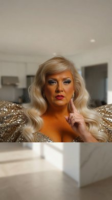
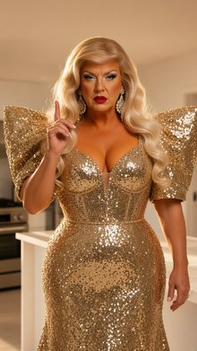
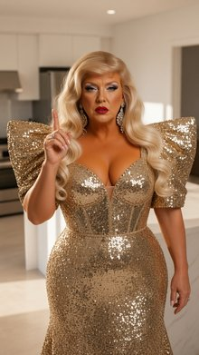
A front-left quarter view medium shot of a living room scene where the blonde woman in a crimson gown stands in the midground center, while other characters are positioned in the background near the counter. The blonde woman in a crimson gown from <IMAGE_1> stands in the center of the living room floor from <IMAGE_0>, midground center, with her torso facing the west hallway archway, her arms resting at her sides, looking towards the hallway. The blue-haired blonde woman from <IMAGE_2> and the South Asian man with a mustache from <IMAGE_3> stand near the laminate kitchenette counter in the background. The slender brunette woman from <IMAGE_4> is also present in the scene. A white cardboard takeout box from the prop description rests on the floor surface with its lid open. The background shows the kitchenette counter and the entrance door, while the south wall is off-frame. Late afternoon daylight streams in from an unseen east window at 5000K color temperature, augmented by warm interior ceiling recessed fixtures operating at 3000K. Cinematic-modern, change the image style to an IMAX photorealistic film still. Shot on ARRI Alexa 65 with IMAX 70mm film quality. Subject rendered with extreme crystal clarity, every detail hyper-defined and sharp. Photorealistic, high-fidelity texture. Ultra-sharp focus on subject, high micro-detail rendering. Freckles/skin pores visible, accurate skin texture, realistic fabric simulation. Massive dynamic range capture, deep shadows and bright highlights. Cinematic color science. Clean precise commercial color grade.
A cinematic-modern, IMAX photorealistic film still capturing a front-left quarter view medium shot of the sunlit living room and kitchen area from <IMAGE_0>. The scene is shot on an ARRI Alexa 65 with IMAX 70mm film quality, featuring massive dynamic range capture, deep shadows, bright highlights, and a clean, precise commercial color grade. In the center midground, the blonde woman from <IMAGE_1> stands on the wooden floor, wearing her sparkling crimson sequined gown with a high leg slit and long matching gloves. Her torso faces the arched hallway in the background, her arms resting at her sides, looking intently toward the hallway. Resting on the floor near her is an open white cardboard takeout box. In the background, standing near the kitchenette counter, are the blue-haired woman from <IMAGE_2> in her pink strapless top and white cargo pants, and the South Asian man with a mustache from <IMAGE_3> wearing his neon green high-visibility jacket and teal polo. The slender brunette woman from <IMAGE_4> in her black knit sweater, denim shorts, and black boots is also present in the background near the counter. The lighting is a dramatic mix of late afternoon daylight streaming in from an unseen east window at a 5000K color temperature, casting long shadows across the floor, augmented by warm 3000K interior ceiling recessed fixtures. The image features extreme crystal clarity, ultra-sharp focus, high micro-detail rendering, and high-fidelity texture, making skin pores, freckles, and realistic fabric simulations hyper-defined.
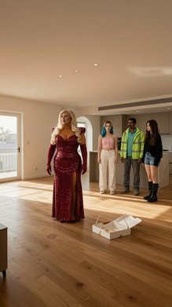
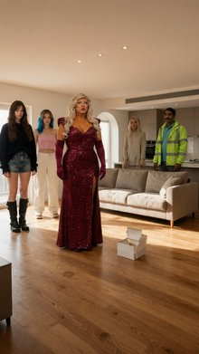
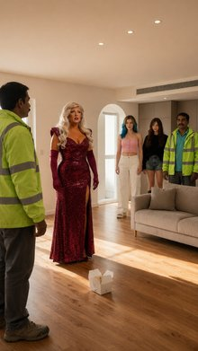
A Back Medium Shot of a blonde woman in a pink bustier and a delivery man in a neon green windbreaker in the apartment living room from <IMAGE_0>. The fair-skinned blue-haired blonde woman from <IMAGE_1> stands in the center of the apartment living room, with her back to the camera, torso facing the kitchenette, hands at her sides, looking toward the delivery man from <IMAGE_2> by the counter; she appears exactly once in the frame. The delivery man from <IMAGE_2> stands in the background by the kitchenette counter, facing the young woman with brown hair from <IMAGE_3>. On the laminate kitchenette counter surface in the background, a square white cardboard takeout container from prop_takeout_box with grease stains and red Chinese graphics rests with its lid ajar. The scene captures the modern sofa against the south wall, the laminate kitchenette counter along the east wall, and the open floor of the apartment from <IMAGE_0>. Late afternoon daylight streams in from an unseen east window at 5000K color temperature, augmented by warm interior ceiling recessed fixtures operating at 3000K, casting realistic shadows. Change the image style to an IMAX photorealistic film still. Shot on ARRI Alexa 65 with IMAX 70mm film quality. Subject rendered with extreme crystal clarity, every detail hyper-defined and sharp. Photorealistic, high-fidelity texture. Ultra-sharp focus on subject, high micro-detail rendering. Freckles/skin pores visible, accurate skin texture, realistic fabric simulation. Massive dynamic range capture, deep shadows and bright highlights. Cinematic color science. Clean precise commercial color grade.
A back medium shot set within the sunlit apartment living room from <IMAGE_0>, captured as an IMAX photorealistic film still with ARRI Alexa 65 and IMAX 70mm film quality. In the center foreground, the fair-skinned woman with blue-tipped hair from <IMAGE_1> stands with her back to the camera, her torso facing the kitchenette. She is wearing the same pink bustier and white cargo pants, with her hands resting at her sides, looking toward the background. In the background by the kitchenette counter, the delivery man from <IMAGE_2> stands wearing his neon green high-visibility windbreaker and teal shirt. He is facing the young woman with brown hair from <IMAGE_4>, who is standing nearby wearing her black knit sweater and denim shorts. On the kitchenette counter rests a square white cardboard takeout container with its lid ajar, featuring visible grease stains and red Chinese graphics. The scene captures the modern sofa against the south wall, the kitchenette counter along the east wall, and the open hardwood floor of the apartment from <IMAGE_0>. Late afternoon daylight streams in from an unseen east window at a 5000K color temperature, augmented by warm 3000K interior ceiling recessed fixtures, casting deep, realistic shadows across the floor. The image features extreme crystal clarity, high micro-detail rendering, visible skin pores, freckles, and realistic fabric simulation, with a massive dynamic range, deep shadows, bright highlights, and a clean, precise commercial cinematic color grade.

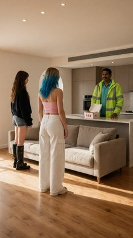
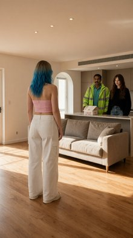
Front-Left Quarter View Medium Shot of the delivery man from <IMAGE_1> and the blonde woman from <IMAGE_2> standing at the laminate kitchenette counter along the east wall from <IMAGE_0>. The delivery man from <IMAGE_1>, a middle-aged south asian man with a mustache, stands in the midground center, torso facing the blonde woman from <IMAGE_2>. He is looking toward her while holding the white cardboard takeout box <prop_takeout_box>, which rests on the kitchenette counter surface with its lid ajar. The delivery man from <IMAGE_1> appears exactly once in the frame, retaining his exact appearance and wardrobe from <IMAGE_1>, including his high-visibility neon green waterproof windbreaker jacket with reflective silver safety stripes and faded turquoise cotton polo shirt. The blonde woman from <IMAGE_2>, a fair-skinned blue-haired blonde woman, stands opposite him in the midground, facing him with arms crossed, observing him with a neutral expression. She appears exactly once in frame, retaining her exact appearance and wardrobe from <IMAGE_2>, including her strapless cropped pastel pink denim bustier and ultra-low-rise white canvas cargo trousers. The midground features the laminate kitchenette counter from <IMAGE_0> with late afternoon daylight streaming in from an unseen east window at 5000K, augmented by warm interior ceiling recessed fixtures operating at 3000K. The capture style is an IMAX photorealistic film still, shot on ARRI Alexa 65 with IMAX 70mm film quality, subject rendered with extreme crystal clarity, hyper-defined details, realistic skin texture, and cinematic color science.
A front-left quarter view medium shot set in the modern apartment interior from <IMAGE_0>, focusing on the kitchenette counter along the east wall. In the midground center stands the middle-aged South Asian delivery man from <IMAGE_1>, retaining his exact appearance, including his mustache, high-visibility neon green waterproof windbreaker jacket with reflective silver safety stripes, faded turquoise cotton polo shirt, and dark grey trousers. His torso faces the blonde woman, and he is looking directly at her while holding a white cardboard takeout box with its lid ajar, resting it on the white marble-patterned laminate kitchenette counter. Standing opposite him is the fair-skinned young woman from <IMAGE_2>, retaining her exact appearance and wardrobe, including her blonde hair with vibrant blue ends, strapless cropped pastel pink denim bustier, and ultra-low-rise white canvas cargo trousers. She faces him with her arms crossed, observing him with a neutral expression. The background features the beige kitchen cabinets, the counter, and the arched doorway from <IMAGE_0>. The scene is illuminated by late afternoon daylight streaming in from an unseen east window at 5000K, blending with warm interior ceiling recessed fixtures operating at 3000K, casting dynamic shadows across the wooden floor and counter. The image is captured as an IMAX photorealistic film still on an ARRI Alexa 65 with IMAX 70mm film quality, featuring extreme crystal clarity, hyper-defined details, realistic skin textures, and cinematic color science.

Right Close Up shot of the young brown-haired woman from <IMAGE_1> sitting on the kitchen counter. The young brown-haired woman from <IMAGE_1> is positioned frame-right, sitting on the white marble kitchen island from <IMAGE_0>, looking wide-eyed and awestruck towards frame-left at the off-frame character. Her torso is angled slightly towards frame-left, with her face turned in profile. She retains her exact appearance and wardrobe from <IMAGE_1>, including her young features, blue eyes, brown hair falling around her face, and her skimpy, low-cut black satin slip dress with thin spaghetti straps. Her expression is stunned and starstruck. The white marble kitchen island from <IMAGE_0> is visible beneath her, while the rest of the kitchen background is softly blurred out of focus due to the shallow depth of field. Warm, bright afternoon sunlight streams in from frame-left, casting a warm glow across her face and highlighting her awestruck expression. Change the image style to an IMAX photorealistic film still. Shot on ARRI Alexa 65 with IMAX 70mm film quality. Subject rendered with extreme crystal clarity, every detail hyper-defined and sharp. Photorealistic, high-fidelity texture. Ultra-sharp focus on subject, high micro-detail rendering. Freckles/skin pores visible, accurate skin texture, realistic fabric simulation. Massive dynamic range capture, deep shadows and bright highlights. Cinematic color science. Clean precise commercial color grade.
A tight close-up shot of the young brown-haired woman from <IMAGE_1>, now sitting on the white marble kitchen island from <IMAGE_0>. She is positioned on the right side of the frame, with her torso angled slightly toward the left and her face turned in a sharp profile. She is looking off-frame to the left with a wide-eyed, awestruck, and starstruck expression, reacting to the unseen presence of the woman in the gold dress from <IMAGE_2>. The young woman retains her exact appearance and wardrobe from <IMAGE_1>, including her youthful features, blue eyes, long wavy brown hair falling naturally around her face, and her low-cut black satin slip dress with thin spaghetti straps. The black satin fabric features highly realistic simulation, showing delicate folds, creases, and a soft sheen. The white marble kitchen island from <IMAGE_0> is visible beneath her, displaying its subtle grey veining. The rest of the kitchen background from <IMAGE_0>, including the white cabinets, stainless steel refrigerator, and oven, is softly blurred out of focus due to a very shallow depth of field, creating a creamy bokeh effect. Warm, bright afternoon sunlight streams in from the left, casting a radiant golden glow across her face and highlighting her stunned expression. The image is rendered as an IMAX photorealistic film still, simulating a shot on an ARRI Alexa 65 with IMAX 70mm film quality. The subject is captured with extreme crystal clarity and ultra-sharp focus, revealing hyper-defined details such as skin pores, subtle freckles, and accurate skin texture. The lighting features a massive dynamic range with deep, rich shadows and bright, luminous highlights, finished with a clean, precise commercial color grade and cinematic color science.
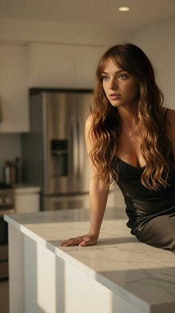
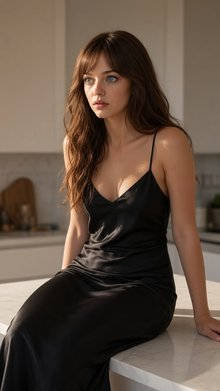
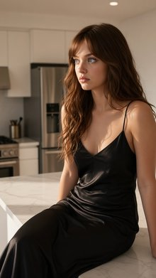
Right Close Up of the brown-haired woman from <IMAGE_1> sitting on the kitchen counter in <IMAGE_0>. The brown-haired woman from <IMAGE_1> is positioned frame-left, sitting atop the white marble kitchen counter. Her torso is angled slightly frame-right, with her head turned to look screen-right, making a mocking, malicious, and amused smirk. She retains her exact appearance and wardrobe from <IMAGE_1>, including her young features, blue eyes, and skimpy, low-cut black satin slip dress with thin spaghetti straps. Her brown hair catches the bright afternoon light. She appears exactly once in the frame in a tight close-up. The background of the sunny beach kitchen from <IMAGE_0> is visible but softly blurred, emphasizing the shallow depth of field. The scene is illuminated by bright, warm afternoon sunlight casting soft shadows, creating a high-gloss bloom on the marble and highlighting the details of her face and hair. This is an IMAX photorealistic film still, shot on ARRI Alexa 65 with IMAX 70mm film quality, featuring extreme crystal clarity, hyper-defined sharp details, photorealistic high-fidelity texture, visible skin pores, realistic fabric simulation, massive dynamic range, deep shadows, and a clean, precise commercial color grade.
A tight, cinematic close-up shot featuring the young woman from <IMAGE_1> sitting on the white marble kitchen counter from <IMAGE_0>. Positioned on the frame-left side of the composition, she sits atop the glossy marble surface, her torso angled slightly toward the right. Her head is turned to look off-screen to the right, and her face displays a mocking, malicious, and amused smirk. She retains her exact appearance and wardrobe from <IMAGE_1>, including her long wavy brown hair, blue eyes, and the skimpy, low-cut black satin slip dress with thin spaghetti straps. The bright, warm afternoon sunlight from the kitchen environment catches her hair and illuminates her features, highlighting visible skin pores and the realistic, high-fidelity sheen of the black satin fabric. The background consists of the sunny kitchen from <IMAGE_0>, including the white cabinetry, stainless steel refrigerator, and the doorway leading to the living room, but it is softly blurred with a shallow depth of field to keep the sharp focus entirely on the woman. The strong natural sunlight casts soft shadows and creates a high-gloss bloom on the marble counter beneath her. The image is rendered as an IMAX photorealistic film still, shot on an ARRI Alexa 65 with IMAX 70mm film quality, featuring extreme crystal clarity, massive dynamic range, deep shadows, and a clean, precise commercial color grade.
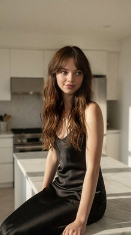
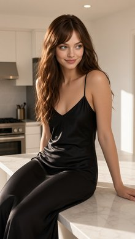
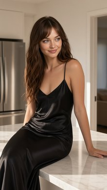
An IMAX photorealistic film still of a Medium Two Shot of the middle-aged man in the green polo from <IMAGE_1> and the young woman in the black slip dress from <IMAGE_2> sitting next to each other on the white marble kitchen counter from <IMAGE_0>. The man in the green polo, who appears exactly once, is positioned midground frame-right, sitting on the counter, torso angled slightly inward, head tilted down looking with a worried expression at the crushed paper delivery bag that lies on the marble counter at frame-left. The young woman in the black slip dress, who appears exactly once, sits beside him in the midground center, looking slightly towards him with a mischievous, smirking expression. The crushed paper delivery bag lies flattened, crumpled, and torn on the counter, with greasy stains on the paper. The scene is shot from an eye-level angle, showing the messy kitchen counter, while the stainless steel appliances and background of <IMAGE_0> are visible but softly out of focus. Warm, bright afternoon sunlight streams in from the side, illuminating the characters and casting soft, long shadows across the white marble surface. Shot on ARRI Alexa 65 with IMAX 70mm film quality, featuring cinematic color science, hyper-defined textures on clothing and skin, and a clean commercial color grade.
An IMAX photorealistic film still capturing a medium two-shot of the middle-aged man from <IMAGE_1> and the young woman from <IMAGE_2> sitting next to each other on the white marble kitchen island from <IMAGE_0>. The man, retaining his green polo shirt, khaki cargo pants, and prominent mustache, is positioned in the midground frame-right. He sits on the counter with his torso angled slightly inward, his head tilted down, looking with a worried, furrowed expression at a crushed paper delivery bag. The young woman, wearing the same long black slip dress and long wavy brown hair from <IMAGE_2>, sits beside him in the midground center. She looks slightly towards him with a mischievous, smirking expression. On the counter at frame-left lies the crushed paper delivery bag, flattened, crumpled, and torn, with dark greasy stains seeping through the paper. The camera is positioned at an eye-level angle, capturing the messy counter while the stainless steel appliances, white cabinets, and background doorway from <IMAGE_0> are visible but softly out of focus with a shallow depth of field. Warm, bright afternoon sunlight streams in from the side, illuminating the characters and casting soft, long shadows across the white marble surface. The image is rendered with IMAX 70mm film quality, shot on an ARRI Alexa 65, featuring cinematic color science, hyper-defined textures on the clothing, skin, and marble, and a clean commercial color grade.
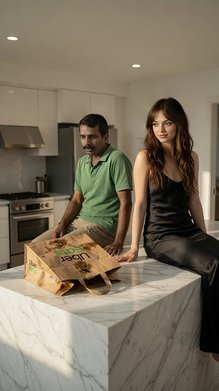
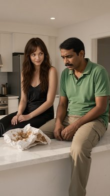
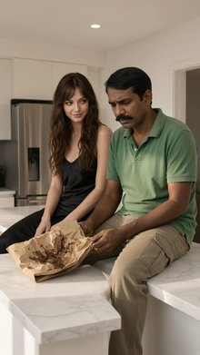
Front Medium Shot of the modern kitchen from <IMAGE_0>. The slender blonde woman with blue-streaked hair from <IMAGE_1> is standing frame-right in the doorway. She appears exactly once, looking frame-left with a shocked and stunned facial expression, retaining her exact appearance and wardrobe from <IMAGE_1> including her white cropped tank top and low-rise blue denim shorts. In the midground frame-left, the mustached dark-haired man from <IMAGE_2> and the young brown-haired blue-eyed woman from <IMAGE_3> are in a tight, passionate embrace on top of the white marble island counter from <IMAGE_0>. The man from <IMAGE_2> and the woman from <IMAGE_3> each appear exactly once. He retains his exact appearance and wrinkled bright green polo shirt from <IMAGE_2>, while she retains her exact appearance and low-cut black satin slip dress from <IMAGE_3>. Beneath them on the counter lies a crumpled, flattened brown paper Uber Eats delivery bag. The kitchen environment from <IMAGE_0> is visible, with the white marble island in the midground and the open doorway on the frame-right wall. Warm, bright afternoon sunlight streams in, casting soft shadows across the modern kitchen and illuminating the characters. Shot in cinematic-modern style, an IMAX photorealistic film still. Shot on ARRI Alexa 65 with IMAX 70mm film quality. Subject rendered with extreme crystal clarity, every detail hyper-defined and sharp. Photorealistic, high-fidelity texture, ultra-sharp focus.
A cinematic-modern, photorealistic IMAX film still depicting a front medium shot of the bright, modern kitchen from <IMAGE_0>. The scene is illuminated by warm, bright afternoon sunlight streaming in, casting distinct geometric shadows across the light tile floor and the white marble island counter. In the midground on the left, sitting atop the white marble island counter from <IMAGE_0>, the dark-haired man with a mustache from <IMAGE_2> and the young woman with long brown hair from <IMAGE_3> are locked in a tight, passionate embrace. The man retains his exact appearance, including his wrinkled bright green polo shirt, khaki cargo pants, and brown sandals. The woman retains her exact appearance and her low-cut black satin slip dress. Resting on the marble counter directly beneath their embrace is a crumpled, flattened brown paper delivery bag. Printed prominently on the side of the bag is the text "Uber Eats" in a bold, sans-serif font, with "Uber" in green and "Eats" in orange. On the frame-right, standing within the open doorway that leads to the living room, is the slender blonde woman with blue-streaked hair from <IMAGE_1>. She appears exactly once, retaining her exact wardrobe: a white cropped tank top, low-rise blue denim shorts, and white sneakers. She is looking frame-left toward the couple with a deeply shocked and stunned facial expression, her eyes wide and mouth slightly agape. The kitchen environment from <IMAGE_0> is faithfully preserved, including the white cabinetry, stainless steel refrigerator, oven, and range hood. The image is shot on an ARRI Alexa 65 with IMAX 70mm film quality, featuring ultra-sharp focus, high-fidelity textures, and extreme crystal clarity.

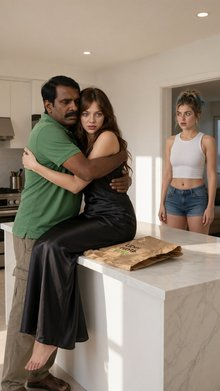
An Over the Shoulder shot looking from behind the shoulder of the man in the green polo from <IMAGE_1> in the foreground, focusing on the young woman in the black slip dress from <IMAGE_2> situated in the midground of the kitchen from <IMAGE_0>. The young woman in the black slip dress appears exactly once, sitting on the white marble kitchen counter. She glares defensively towards frame-right, her body slightly angled in that direction. The man in the green polo appears once, positioned in the foreground with his back partially to the camera, his shoulder framing the left side of the image. The crushed brown paper delivery bag is visible, crumpled and torn on the marble counter near the woman. The background reveals the professional stainless steel refrigerator and matching stove against the north wall of the kitchen, with the rest of the room soft-focused. Warm, bright afternoon sunlight streams in, illuminating the young woman's face and highlighting her intense, volatile expression. Change the image style to an IMAX photorealistic film still. Shot on ARRI Alexa 65 with IMAX 70mm film quality. Subject rendered with extreme crystal clarity, every detail hyper-defined and sharp. Photorealistic, high-fidelity texture. Ultra-sharp focus on subject, high micro-detail rendering. Freckles/skin pores visible, accurate skin texture, realistic fabric simulation. Massive dynamic range capture, deep shadows and bright highlights. Cinematic color science. Clean precise commercial color grade.
An over-the-shoulder cinematic shot looking past the man from <IMAGE_1> in the foreground, focusing on the young woman from <IMAGE_2> in the midground. The man is positioned with his back partially to the camera, his left shoulder and back framing the left side of the composition, wearing the same green polo shirt and khaki cargo pants, with his dark hair and mustache partially visible from behind. The camera focuses sharply on the young woman with long wavy brown hair, who is now sitting on the white marble kitchen island from <IMAGE_0>. She is wearing the same long black silk slip dress, but her body is slightly angled towards the right, and she is glaring defensively towards the right edge of the frame with an intense, volatile expression. Her face features hyper-defined details, including visible freckles, skin pores, and accurate skin texture. Resting on the marble counter near her is a crushed, crumpled, and torn brown paper delivery bag. The background reveals the kitchen environment from <IMAGE_0>, featuring the professional stainless steel refrigerator and matching stove against the north wall, rendered in a soft focus with a shallow depth of field. Warm, bright afternoon sunlight streams into the room, illuminating the young woman's face and the black silk fabric with realistic draping, while casting deep, dramatic shadows across the kitchen. The image is styled as an IMAX photorealistic film still, shot on an ARRI Alexa 65 with IMAX 70mm film quality, featuring extreme crystal clarity on the subject, high-fidelity texture, massive dynamic range, cinematic color science, and a clean, precise commercial color grade.

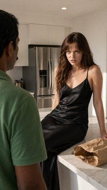
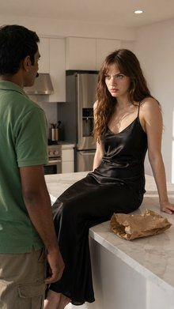
A 4k-vlog Two Shot. Brock bro from <IMAGE_1> and Tomatina from <IMAGE_2> are positioned around the daybed from <IMAGE_0> in a medium close-up. Brock bro, the green bumpy muscular anthropomorphic broccoli from <IMAGE_1>, is positioned on the frame-left, holding a single translucent green grape from prop_grape to Tomatina's mouth with his frame-right hand. He has an earnest, sweet-natured expression and retains his exact appearance from <IMAGE_1>, including his green bumpy broccoli structure and his white tropical flower lei. Tomatina, the glossy red smooth anthropomorphic tomato woman from <IMAGE_2>, is on the frame-right, with her mouth slightly open to receive the grape. She retains her exact appearance from <IMAGE_2>, including her glossy red skin and gold hoop earrings. The plush white daybed with sheer white curtains from <IMAGE_0> is between them. Soft, warm golden hour sunlight filters through the sheer curtains, casting a soft, romantic glow on the characters. Captured in a 4K lifestyle vlog photograph style with a soft, even frontal glow on the subjects, extremely smooth processed skin with zero grain, and a warm, punchy color grade with boosted saturation.
A 4K lifestyle vlog-style medium close-up two-shot set on the wooden deck of the cabana from <IMAGE_0>. The plush white daybed with its sheer white curtains and bamboo side table serves as the central backdrop, with the characters positioned on either side of it. On the frame-left is the muscular, anthropomorphic broccoli character from <IMAGE_1>, retaining his exact appearance: the bumpy green broccoli head, black sunglasses, white tropical Hawaiian shirt with orange flowers and green leaves, thick gold chain, and white flower lei. He has an earnest, sweet-natured expression and is reaching out with his right hand to hold a single, translucent green grape up to the other character's mouth. On the frame-right is the anthropomorphic tomato woman from <IMAGE_2>, retaining her exact appearance: the glossy red tomato head with green leaves on top, large brown eyes, gold hoop earrings, and the woven vine bikini adorned with small flowers and strawberries. Her mouth is slightly open to receive the grape. Soft, warm golden hour sunlight filters through the sheer curtains of the daybed, casting a romantic glow. The image features a soft, even frontal glow on the subjects, extremely smooth processed textures with zero grain, and a warm, punchy color grade with boosted saturation.
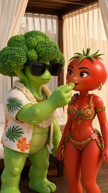
Two Shot of a green broccoli man from <IMAGE_1> and a red tomato woman from <IMAGE_2> on the pool deck of the luxury villa from <IMAGE_0>. The green broccoli man from <IMAGE_1> is standing screen-left in the midground on the tiled walkway, torso angled towards screen-right, with his head turned in profile as he looks directly at the red tomato woman. The red tomato woman from <IMAGE_2> is seated screen-right on the wooden sun lounger in the midground, looking back towards the green broccoli man with a neutral expression. The green broccoli man appears exactly once, retaining his exact appearance as a green bumpy muscular anthropomorphic broccoli wearing a white tropical flower lei from <IMAGE_1>. The red tomato woman appears exactly once, retaining her exact appearance as a glossy red smooth anthropomorphic tomato woman wearing gold hoop earrings and a thin gold anklet from <IMAGE_2>. In the background, the pool deck, tiled floor, and the white stucco villa wall are visible under bright, direct afternoon sunlight that casts sharp shadows. Shot in a 4K lifestyle vlog photograph style with a soft even frontal glow on the subjects, extremely smooth processed skin, zero grain, a warm punchy color grade, and boosted saturation.
A 4K lifestyle vlog photograph capturing a two-shot scene set on the sunny pool deck of the luxury villa from <IMAGE_0>. In the midground on the left, standing on the beige tiled walkway, is the muscular, anthropomorphic green broccoli man from <IMAGE_1>. He retains his exact appearance, including the bumpy green broccoli head, dark sunglasses, open white Hawaiian shirt with orange flowers and green leaves, white flower lei, and thick gold chain. His torso is angled towards the right, and his head is turned in profile as he looks directly at the other character. On the right side of the midground, the glossy red anthropomorphic tomato woman from <IMAGE_2> is seated on one of the wooden sun loungers. She retains her exact appearance, featuring the smooth red tomato head with a green stem, large brown eyes, gold hoop earrings, a woven floral bikini top and bottom, and a thin gold anklet. She is looking back towards the broccoli man with a neutral expression. The background features the clear blue rippling water of the swimming pool, the beige tiled floor, and the stark white stucco villa wall with the dark wall sconce and sharp palm tree shadows seen in <IMAGE_0>. The scene is illuminated by bright, direct afternoon sunlight casting sharp shadows on the ground and wall, while the characters themselves are highlighted with a soft, even frontal glow. The image features extremely smooth processed skin textures, zero grain, and a warm, punchy color grade with boosted saturation.

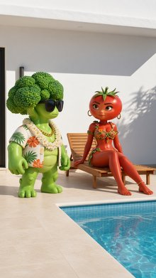
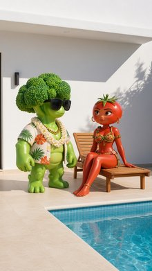
Tight Close Up. The blond man from <IMAGE_1> is positioned in the center of the frame, captured in a tight close-up that focuses on his head and shoulders. His face is turned slightly towards frame-right as he looks off-frame with an expression of intense excitement, his eyes wide and a joyful smile on his face. He appears exactly once in the frame, retaining his exact appearance, blonde hair, and sheer black mesh crop top and thin black leather choker with a silver hoop from <IMAGE_1>. The other character from <IMAGE_2> is completely off-frame. In the background, the brick wall from <IMAGE_0> is heavily blurred, creating a soft, shallow depth of field. Saturated pink and blue light from the neon signs in <IMAGE_0> casts vibrant, colorful highlights across his face and neck, creating high-contrast shadows. Change the image style to an IMAX photorealistic film still. Shot on ARRI Alexa 65 with IMAX 70mm film quality. Subject rendered with extreme crystal clarity, every detail hyper-defined and sharp. Photorealistic, high-fidelity texture. Ultra-sharp focus on subject, high micro-detail rendering. Freckles/skin pores visible, accurate skin texture, realistic fabric simulation. Massive dynamic range capture, deep shadows and bright highlights. Cinematic color science. Clean precise commercial color grade.
A tight close-up shot focusing on the head and shoulders of the blond man from <IMAGE_1>, positioned in the center of the frame. His face is turned slightly towards frame-right, looking off-frame with an expression of intense excitement, wide eyes, and a joyful smile. He retains his exact appearance from <IMAGE_1>, including his styled blonde hair, the sheer black mesh crop top, and the thin black leather choker with a silver hoop. The other man from <IMAGE_2> is completely off-frame and excluded from the scene. The background features the brick wall from <IMAGE_0>, heavily blurred to create a soft, shallow depth of field. Saturated pink and blue light from the neon sign in <IMAGE_0> casts vibrant, colorful highlights across the man's face, neck, and clothing, creating high-contrast deep shadows. The image is styled as an IMAX photorealistic film still, shot on an ARRI Alexa 65 with IMAX 70mm film quality. The subject is rendered with extreme crystal clarity and ultra-sharp focus, featuring high micro-detail rendering where freckles and skin pores are visible, alongside accurate skin texture and realistic fabric simulation of the mesh top. The lighting exhibits massive dynamic range capture, deep shadows, bright highlights, cinematic color science, and a clean, precise commercial color grade.
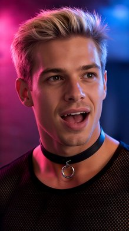
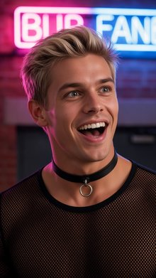
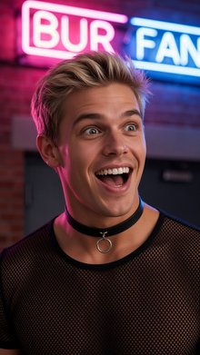
An IMAX photorealistic film still with a Front Close Up shot. The camera is focused tightly on the hands of the blonde man from <IMAGE_1> in the foreground, with steel handcuffs from prop_handcuffs clamped securely around his wrists. The cold, metallic surface of the handcuffs catches the flashing red emergency light. In the background, the blonde man is visible from the chest up, making an exaggerated pouty frown, retaining his exact physical appearance and tight black crop-top shirt with neon pink trim from <IMAGE_1>. The scene is set inside the high-security vault from <IMAGE_0>, where the concrete floor and stone walls are illuminated by high-intensity flashing crimson alarm lights from above, casting deep shadows. Captured with extreme crystal clarity on an ARRI Alexa 65, featuring ultra-sharp focus on the foreground handcuffs, high micro-detail rendering, massive dynamic range, and a clean cinematic color grade.
An IMAX photorealistic film still featuring a dramatic front close-up shot set inside the high-security vault from <IMAGE_0>. The camera is focused tightly in the extreme foreground on the hands of the blonde man from <IMAGE_1>. His wrists are bound together, clamped securely by heavy, cold steel handcuffs. The metallic surface of the handcuffs and chain catches the intense, flashing red emergency light, creating sharp, brilliant reflections. In the softly blurred background, the blonde man is visible from the chest up, making an exaggerated pouty frown with pushed-out lips and furrowed brows, a stark contrast to his original smile. He retains his exact physical appearance and is wearing the same tight black crop-top shirt with neon pink trim along the collar, sleeves, and hem as seen in <IMAGE_1>. The environment is the stone-walled vault from <IMAGE_0>, featuring the concrete floor, the central black pedestal, and the glowing red gem under the glass dome. The scene is now illuminated by high-intensity flashing crimson alarm lights from above, casting deep, dramatic shadows across the textured stone walls and floor. Captured with extreme crystal clarity on an ARRI Alexa 65, the image features ultra-sharp focus on the foreground handcuffs, high micro-detail rendering of the skin and metal, massive dynamic range, and a clean cinematic color grade emphasizing the vibrant red tones.

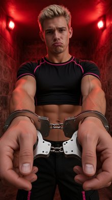
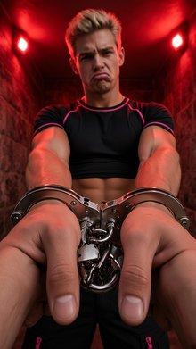
Back Medium Shot of the blond man and the bartender at the mahogany bar counter from <IMAGE_0>. The fair-skinned blond man from <IMAGE_1> is positioned centered in the foreground, viewed from behind with his torso facing away from the camera. He retains his exact appearance and wardrobe from <IMAGE_1>, including his blond hair, sheer black mesh crop top, metallic silver skinny pants, and black leather choker. The bearded bartender from <IMAGE_2> is situated in the midground behind the counter, facing towards the blond man with a focused, weary expression. He appears exactly once, retaining his brown hair, beard, charcoal grey denim button-up shirt, and matching charcoal waist-apron from <IMAGE_2>. The shot captures the long polished mahogany counter from <IMAGE_0> running from the foreground into the midground, with deep purple LED lights glowing brightly from below the counter lip, casting a deep violet light over the characters. IMAX photorealistic film still. Shot on ARRI Alexa 65 with IMAX 70mm film quality. Subject rendered with extreme crystal clarity, every detail hyper-defined and sharp. Photorealistic, high-fidelity texture. Ultra-sharp focus on subject, high micro-detail rendering. Accurate skin texture, realistic fabric simulation. Massive dynamic range capture, deep shadows and bright highlights. Cinematic color science. Clean precise commercial color grade.
A medium shot set within the moody, dimly lit bar environment from <IMAGE_0>. In the foreground, the fair-skinned blond man from <IMAGE_1> is positioned centered and viewed from behind, his torso facing away from the camera toward the bar. He retains his exact wardrobe from <IMAGE_1>, including his short blond hair, the sheer black mesh crop top, metallic silver skinny pants, and the black leather choker with a silver ring. Behind the long, polished mahogany bar counter from <IMAGE_0>, the bearded bartender from <IMAGE_2> stands in the midground, facing the blond man. The bartender retains his brown hair, full beard, charcoal grey denim button-up shirt with rolled sleeves, and matching charcoal waist-apron from <IMAGE_2>, but now wears a focused, weary expression. The perspective captures the mahogany counter running from the foreground into the midground. Deep purple LED lights glow intensely from beneath the counter lip, casting a strong violet light over the characters' lower bodies and the floor. The image is styled as an IMAX photorealistic film still, shot on an ARRI Alexa 65 with IMAX 70mm film quality. It features extreme crystal clarity, ultra-sharp focus on the subjects, high micro-detail rendering, accurate skin textures, and realistic fabric simulation. The lighting showcases a massive dynamic range with deep shadows and bright highlights, finished with a clean, precise commercial color grade and cinematic color science.

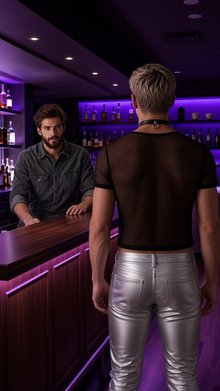
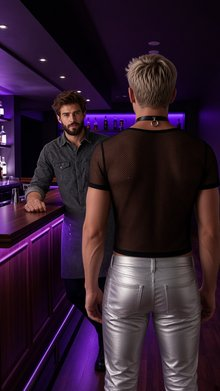
Front Medium Shot. Giga Buns, a tall, muscular white anthropomorphic rabbit from <IMAGE_1>, stands screen-left in the midground of the dark alleyway from <IMAGE_0>, body angled forward towards the camera. He appears exactly once in the frame. He is holding the mafia pistol, which is a polished, chrome-plated semi-automatic pistol with custom ivory grip plates and elegant engravings along its silver metal frame, outstretched with both hands in a firing stance. The west brick wall of the alleyway from <IMAGE_0> is visible behind him. Harsh, cool-blue side-lighting from a distant streetlamp illuminates Giga Buns's white fur and casts high-contrast shadows. Giga Buns retains his exact appearance and wardrobe from <IMAGE_1>, including his white fur, tall rabbit ears, muscular physique, and a torn pinstripe mobster vest with a gold pocket watch chain, worn with dark trousers. The image style is an IMAX photorealistic film still. Shot on ARRI Alexa 65 with IMAX 70mm film quality. Subject rendered with extreme crystal clarity, every detail hyper-defined and sharp. Photorealistic, high-fidelity texture. Ultra-sharp focus on subject, high micro-detail rendering. Realistic fabric simulation. Massive dynamic range capture, deep shadows and bright highlights. Cinematic color science. Clean precise commercial color grade.
A front medium shot set within the dark, wet alleyway environment from <IMAGE_0>. Standing in the midground on the screen-left side is the tall, muscular white anthropomorphic rabbit character from <IMAGE_1>. His body is angled forward, facing the camera in an aggressive stance. He retains his exact appearance and wardrobe from <IMAGE_1>, including his white fur, tall rabbit ears, human-like face with a sinister expression, heavily muscled physique, and large rabbit feet. He is wearing the same torn, dark pinstripe mobster vest with a gold pocket watch chain and dark trousers. He is holding a polished, chrome-plated semi-automatic pistol with custom ivory grip plates and elegant engravings along its silver metal frame, gripping it with both hands outstretched in a firing stance. The background features the wet, reflective pavement, the green graffiti-covered dumpster, and the towering brick walls of the alleyway from <IMAGE_0>. The west brick wall is prominently visible behind him. Harsh, cool-blue side-lighting from the distant streetlamp illuminates the rabbit's white fur and casts dramatic, high-contrast shadows across his torn vest and the wet ground. The image is styled as an IMAX photorealistic film still, shot on an ARRI Alexa 65 with IMAX 70mm film quality. The subject is rendered with extreme crystal clarity, featuring hyper-defined textures, realistic fabric simulation, massive dynamic range, deep shadows, bright highlights, and a clean, precise commercial color grade.

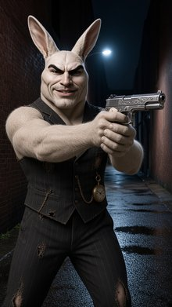
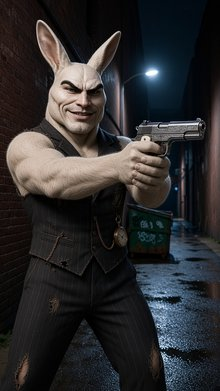
An Over the Shoulder Shot looking over the right shoulder of the blonde woman from <IMAGE_1> in the foreground, who is framed screen-right and facing away from the camera. She holds a modern slim smartphone from <IMAGE_1> in her hand, pointing the camera towards a green anthropomorphic frog from <IMAGE_2> seated on the heavy wooden stool (STOOL_A) in the midground, screen-left, facing south. The green anthropomorphic frog from <IMAGE_2> holds a small organic mushroom that glows with an intense bioluminescent violet light in his webbed hand. He sits in the clearing from <IMAGE_0>, surrounded by three-meter-tall glowing neon-pink mushrooms and twisting neon-blue vines wrapping around thick tree trunks in the background. The scene is illuminated by dappled golden sunlight filtering down from the canopy, highlighting his green skin with warm, shifting patterns. This is an IMAX photorealistic film still, shot on ARRI Alexa 65 with IMAX 70mm film quality. The subjects are rendered with extreme crystal clarity, with hyper-defined details, accurate skin texture, realistic fabric simulation, a massive dynamic range, and a clean, precise commercial color grade.
An over-the-shoulder shot looking over the right shoulder of the blonde woman from <IMAGE_1>, who is framed screen-right in the foreground and facing away from the camera. She is wearing the same light blue dress with a white lace collar and white waist belt, and she holds a modern slim smartphone in her hand, pointing its camera toward the midground. In the midground on the screen-left, the green anthropomorphic frog from <IMAGE_2> is seated on the heavy, rustic wooden stool (STOOL_A) from <IMAGE_0>, facing south. The frog retains his red and gold-rimmed sunglasses, colorful striped beanie, thick gold chain, and white t-shirt. In his webbed hand, he holds a small organic mushroom that glows with an intense bioluminescent violet light, casting warm, shifting purple patterns across his textured green skin. The scene is set in the magical forest clearing from <IMAGE_0>, featuring the heavy wooden picnic table, mossy ground, and dirt path. The background is filled with the same three-meter-tall glowing neon-pink mushrooms and twisting neon-blue vines wrapping around thick tree trunks. Dappled golden sunlight filters down from the forest canopy, illuminating the scene. The image is rendered as an IMAX photorealistic film still, shot on an ARRI Alexa 65 with IMAX 70mm film quality, featuring extreme crystal clarity, hyper-defined details, accurate skin and fabric textures, a massive dynamic range, and a clean, precise commercial color grade.

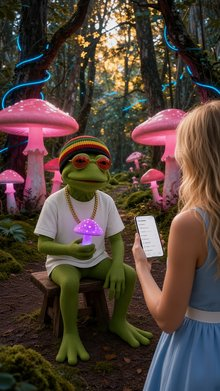
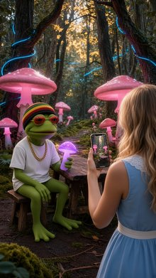
An IMAX photorealistic film still, Front Wide Shot of the mossy clearing from <IMAGE_0>. Seated on the heavy wooden stool frame-right (STOOL_B) is the fair-skinned blonde woman from <IMAGE_1>, appearing exactly once in the frame. Her face is tilted upward toward the warm golden sunlight with a peaceful expression, retaining her exact appearance, blonde hair, and sky-blue sleeveless summer dress with a delicate white lace collar from <IMAGE_1>. Seated on the heavy wooden stool frame-left (STOOL_A) is the green anthropomorphic frog from <IMAGE_2>, appearing exactly once in the frame, looking calm and peaceful while wearing his miniature knitted rasta beanie with red, gold, and green horizontal stripes from <IMAGE_2>. The rustic rectangular wooden table from <IMAGE_0> sits between them. The background is filled with three-meter-tall glowing neon-pink mushrooms and twisting neon-blue vines wrapping around gnarled tree trunks, framing the subjects. The scene is illuminated by dappled, whimsical golden sunlight filtering from the canopy, combined with the soft bioluminescent glow of the pink and blue vegetation. Captured on an ARRI Alexa 65 with IMAX 70mm film quality, extreme crystal clarity, hyper-defined details, and realistic fabric simulation with a clean, precise cinematic color grade.
An IMAX photorealistic film still, captured as a front wide shot of the enchanting mossy forest clearing from <IMAGE_0>. The rustic rectangular wooden table from <IMAGE_0> sits centrally in the frame. Seated on the heavy wooden stool on the frame-left (STOOL_A) is the green anthropomorphic frog from <IMAGE_2>, appearing exactly once in the scene. He retains his exact outfit from <IMAGE_2>, including the miniature knitted rasta beanie with red, gold, and green horizontal stripes, red oval sunglasses, thick gold chain necklace, and plain white t-shirt, but is now posed seated on the stool, looking calm and peaceful. Seated on the heavy wooden stool on the frame-right (STOOL_B) is the fair-skinned blonde woman from <IMAGE_1>, also appearing exactly once. She retains her exact appearance, flowing wavy blonde hair, and sky-blue sleeveless summer dress with a delicate white lace collar and white waist belt from <IMAGE_1>. Her face is tilted upward toward the warm golden sunlight filtering through the canopy, wearing a serene and peaceful expression. The background faithfully recreates the environment of <IMAGE_0>, filled with three-meter-tall glowing neon-pink mushrooms and twisting neon-blue vines wrapping around gnarled tree trunks, perfectly framing the subjects. The scene is illuminated by dappled, whimsical golden sunlight combined with the soft bioluminescent glow of the pink and blue vegetation. Captured on an ARRI Alexa 65 with IMAX 70mm film quality, featuring extreme crystal clarity, hyper-defined details, realistic fabric simulation on the clothing, and a clean, precise cinematic color grade.
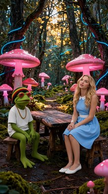
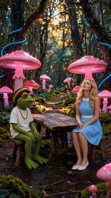
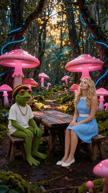
Front Medium Shot of the plastic blonde pink doll from <IMAGE_1> standing inside the cardboard display box from <IMAGE_0>. The plastic blonde pink doll from <IMAGE_1> appears exactly once in the frame, positioned centered in the midground inside the display box. Her torso and head are facing directly forward with both of her flat plastic palms pressed flat against the transparent clear front window panel of the display box. She has a blank doll-like expression on her face, and retains her exact appearance and wardrobe from <IMAGE_1>, including her plastic blonde hair and her tailored neon pink minidress with silver metallic sequined lapels, structured boxy shoulders, matching pink glossy plastic thigh-high boots, and a wide studded patent leather belt. A miniature white plastic cigarette is resting inside the small molded plastic slot at the bottom corner of the display box floor. The scene shows the interior of the display box from <IMAGE_0> through the transparent clear plastic front window, with its solid glossy matte pink back and side interior walls and flat white display box floor. The shot is illuminated by the artificial midday studio environment from <IMAGE_0> with two high-intensity overhead white spotlights casting harsh downward light and sharp shadows inside the box.
A front medium shot of the blonde doll from <IMAGE_1> standing inside the illuminated display box from <IMAGE_0>. The doll is centered in the midground, retaining her exact appearance and wardrobe from <IMAGE_1>, including her voluminous blonde hair with pink tips, pink butterfly headband, tailored neon pink minidress with silver sequined lapels, studded belt, and pink thigh-high boots. Her torso and head face directly forward, and both of her flat plastic palms are pressed flat against the transparent clear front window panel of the box. She has a blank, doll-like expression. A miniature white plastic cigarette rests inside the small molded slot on the bottom right corner of the box's floor. The scene is illuminated by the box's two overhead spotlights, casting harsh downward light and sharp shadows on the pink interior walls and floor, set against a plain grey studio background.

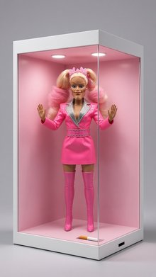
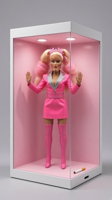
Front Medium Shot of the woman in the red suit from <IMAGE_1> standing behind the wooden speaker podium in the center of the stage from <IMAGE_0>. The woman in the red suit from <IMAGE_1> is positioned in the midground center, with her torso facing directly towards the camera and her hands resting on the podium's upper surface, looking forward with a serious expression. She appears exactly once in the frame and retains her exact appearance and wardrobe from <IMAGE_1>, including her fair skin, styled blonde hair, her tailored scarlet red double-breasted suit jacket with padded shoulders, wide peak lapels, and gold buttons, her white collared shirt, and her red silk necktie. The background shows the dim wood-paneled walls of the press auditorium from <IMAGE_0> while the foreground is clear. Bright white overhead stage spotlights cast a dramatic cone of light directly onto the podium area and the woman, creating a formal press conference atmosphere with high contrast against the dark surroundings.
A front medium shot capturing the woman from <IMAGE_1> standing behind the wooden speaker podium in the center of the stage from <IMAGE_0>. The woman retains her exact appearance and wardrobe from <IMAGE_1>, including her fair skin, styled voluminous blonde hair, and her tailored scarlet red double-breasted suit jacket with padded shoulders, wide peak lapels, and gold buttons, paired with a white collared shirt and a red silk necktie. She is positioned in the midground center, her torso facing directly towards the camera, with her hands resting on the podium's upper surface. She looks forward with a serious expression. The scene is illuminated by bright white overhead stage spotlights that cast a dramatic cone of light directly onto the podium area and the woman, creating a formal press conference atmosphere with high contrast against the dark surroundings. The background features the dim, dark wood-paneled walls of the auditorium from <IMAGE_0>. The foreground is clear, showing the light wooden stage floor, while the dimly lit wooden aisle and dark audience seats from <IMAGE_0> frame the bottom of the image.

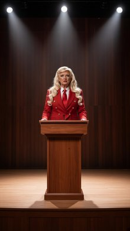
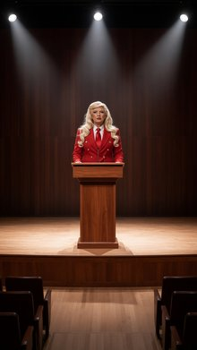
Two Shot of a woman in a bedsheet from <IMAGE_1> and a blue monster from <IMAGE_2> standing inside the round silver metal trash can from <IMAGE_0> in the midground, with their upper bodies visible. The woman in a bedsheet from <IMAGE_1> stands on the left side of the trash can, looking directly at the camera with a sassy, expressionless gaze, while retaining her exact appearance, tanned skin, brown eyes, brown hair, and white cotton bedsheet wardrobe from <IMAGE_1>. The blue monster from <IMAGE_2> stands on the right side of the trash can, looking wild-eyed and slightly crazed, retaining his exact blue furry appearance from <IMAGE_2>. Both subjects appear exactly once in the frame, surrounded by the narrow brick alleyway from <IMAGE_0> with debris and cardboard boxes in the background. Dim, cold midnight moonlight shines down from above, casting deep, high-contrast shadows across the brick walls and damp asphalt pavement. Cinematic-modern style, rendered as an IMAX photorealistic film still. Shot on ARRI Alexa 65 with IMAX 70mm film quality. Subject rendered with extreme crystal clarity, every detail hyper-defined and sharp. Photorealistic, high-fidelity texture. Ultra-sharp focus on subject, high micro-detail rendering. Freckles/skin pores visible, accurate skin texture, realistic fabric simulation. Massive dynamic range capture, deep shadows and bright highlights. Cinematic color science. Clean precise commercial color grade.
A cinematic-modern, photorealistic IMAX film still set within the narrow, dark brick alleyway from <IMAGE_0>. The scene is illuminated by dim, cold midnight moonlight shining down from the glowing moon above, casting deep, high-contrast shadows across the damp, reflective asphalt pavement. In the midground, the round silver metal trash can from <IMAGE_0> now contains two subjects standing inside it, with their upper bodies clearly visible. On the left side of the trash can stands the woman from <IMAGE_1>, retaining her exact appearance, tanned skin, brown eyes, wavy brown hair, and white cotton bedsheet wardrobe. She is looking directly at the camera with a sassy, expressionless gaze, her skin texture, freckles, and pores rendered with extreme crystal clarity. On the right side of the trash can stands the fluffy blue monster from <IMAGE_2>, retaining its exact blue furry appearance, large eyes, and toothy grin, but now looking wild-eyed and slightly crazed. Both subjects appear exactly once in the frame. The surrounding environment remains consistent with <IMAGE_0>, featuring the green dumpster to the left, scattered cardboard boxes to the right, and the dark brick walls with pipes. The image features ultra-sharp focus on the subjects, high micro-detail rendering, realistic fabric simulation of the bedsheet, and massive dynamic range capture with bright highlights and deep shadows, mimicking a shot on ARRI Alexa 65 with IMAX 70mm film quality and a clean, precise commercial color grade.

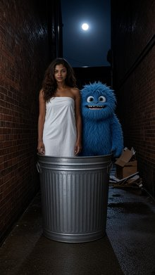
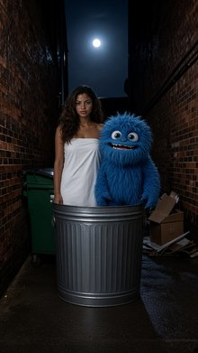
A Two Shot of the tanned woman from <IMAGE_1> and the small blue furry monster from <IMAGE_2> on the unmade bed from <IMAGE_0>. The tanned woman from <IMAGE_1> is sitting up frame-left on the unmade bed, staring towards frame-right with an expression of absolute dread. She appears exactly once, wrapped tightly in a simple white cotton bedsheet that covers her body, retaining her exact appearance from <IMAGE_1> including her tanned skin, brown eyes, and brown hair. Frame-right, the small blue furry monster from <IMAGE_2> appears exactly once, sitting on the bed, raising his blue furry arm and gesturing excitedly while laughing with a wide, manic grin, retaining his exact appearance as a nude, furry blue monster from <IMAGE_2>. The scene is set in the bedroom from <IMAGE_0>, with the queen-sized bed angled diagonally, and the wooden headboard and cluttered nightstand visible in the background. Morning light filters dimly through the closed window blinds, casting soft, warm dust-mote shadows across the unmade bed and the characters. Captured as an IMAX photorealistic film still, shot on ARRI Alexa 65 with IMAX 70mm film quality, rendering the subjects with extreme crystal clarity, hyper-defined details, realistic fabric simulation, and a cinematic color grade.
A photorealistic, cinematic two-shot set within the bedroom environment from <IMAGE_0>. The scene takes place on the unmade queen-sized wooden bed with its rumpled white sheets, angled diagonally across the frame. The wooden headboard and the cluttered wooden nightstand with cans and scattered jewelry from <IMAGE_0> are visible in the background. Morning light filters dimly through the closed window blinds, casting soft, warm, striped shadows and illuminating dust motes in the air. Sitting on the left side of the bed is the tanned woman from <IMAGE_1>, retaining her exact physical appearance, including her long wavy brown hair, brown eyes, and tanned skin. She is wrapped tightly in a simple white cotton bedsheet that covers her body, and she is staring towards the right side of the frame with an expression of absolute dread and terror. On the right side of the bed sits the small blue furry monster from <IMAGE_2>, retaining its exact appearance as a nude, fluffy blue creature with large eyes and claws. The monster is laughing with a wide, manic grin, raising its furry blue arm and gesturing excitedly towards the woman. The image is rendered as an IMAX film still, shot on an ARRI Alexa 65 with IMAX 70mm film quality, featuring a cinematic color grade, extreme crystal clarity, hyper-defined textures on the fur and fabric, and realistic fabric simulation.
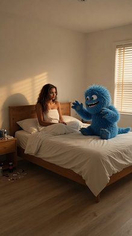
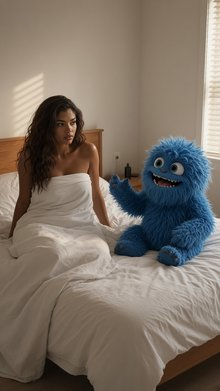
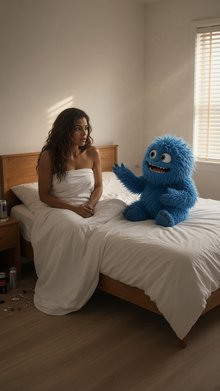
Front Medium Shot. From the static perspective of her phone propped on the mushroom edge, the young woman in the blue slip dress from <IMAGE_1> is standing in front of the large flat blue mushroom from <IMAGE_0>. She appears exactly once in the frame. The young woman in the blue slip dress from <IMAGE_1> stands in the midground, facing forward with a bright, energetic smile, looking directly down at her propped phone camera. She holds the wax-sealed black invitation card prop—a thick matte black envelope with a silver wax seal stamped with a top hat—proudly in her right hand to show the camera. She retains her exact appearance and wardrobe from <IMAGE_1>, including her fair skin, blond hair, modern blue silk slip dress, and delicate silver necklace. Visible in the frame from the waist up. In the background, the large blue flat-topped mushroom and surrounding wild purple ferns from <IMAGE_0> are visible, while the far end of the path is obscured. The scene is illuminated by a dreamy twilight with pastel lavender skies, with a soft pink and orange glow emanating from the flowers. This is an iPhone 16 Pro Max rear camera photograph. 24mm main lens, 2x optical zoom. Sharp focus, subtle depth of field. True-to-life colors, clean neutral tones. Photorealistic, ultra detailed, raw photo, minimal grain, natural skin texture, 4k. Dynamic range, sharp contrast, natural lighting, HDR.
A photorealistic, front medium shot captured from the static perspective of a smartphone camera propped on the edge of the large, flat-topped blue mushroom seen in <IMAGE_0>. In the midground, the young blonde woman from <IMAGE_1> stands facing forward, appearing exactly once in the frame from the waist up. She retains her exact appearance and wardrobe from <IMAGE_1>, including her fair skin, long wavy blonde hair, delicate silver necklace, and the modern blue silk slip dress. She has a bright, energetic smile and is looking directly down at the camera lens. In her right hand, she proudly holds up a wax-sealed black invitation card prop—a thick matte black envelope featuring a prominent silver wax seal stamped with a top hat design. The background features the whimsical forest environment of <IMAGE_0>, specifically highlighting the large blue mushroom and the surrounding vibrant purple ferns, while the cobblestone path and the ornate gate at the far end are obscured from this low angle. The scene is illuminated by a dreamy twilight atmosphere with pastel lavender skies, enhanced by a soft pink and orange glow emanating from nearby flowers. The image simulates an iPhone 16 Pro Max rear camera photograph using a 24mm main lens with 2x optical zoom, featuring sharp focus on the woman and the invitation, a subtle depth of field, true-to-life colors, natural skin texture, minimal grain, and dynamic HDR lighting that reflects the twilight glow onto her silk dress.

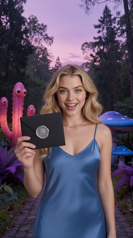
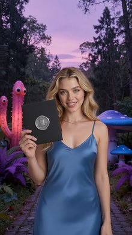
Front Medium Shot in an iphone-selfie style of the blond woman from <IMAGE_1> descending down toward the giant red velvet armchair from <IMAGE_0>. The blond woman from <IMAGE_1> appears exactly once in the frame, positioned in the mid-air upper-to-middle portion of the shot. Her hands are raised high-angle, holding the camera facing her face, with her arm extended forward and out of frame toward the bottom right in a natural selfie posture. Her gaze is directed looking slightly up and forward at the camera with an excited, vlogging expression. She retains her exact appearance and wardrobe from <IMAGE_1>, including her fair skin, long blond hair, modern blue silk slip dress, and delicate silver necklace. Below her, the mossy clearing of the subterranean environment from <IMAGE_0> is visible, with the massive red velvet armchair sitting centered below her. The scene is illuminated by dim, mystical subterranean blue bioluminescence with floating dust particles caught in shafts of soft white light. Photo-realism, High-fidelity texture: exact skin color, undertone, hue, saturation, pores, fine lines, natural discoloration, moles, freckles, and blemishes — no smoothing, retouching, or beautification.
A photorealistic, iPhone-selfie style front medium shot featuring the blonde woman from <IMAGE_1> and the mystical forest environment from <IMAGE_0>. The woman is captured mid-air in the upper-to-middle portion of the frame, dynamically descending toward the ground. She is holding the camera in a high-angle selfie posture, with one arm extended forward and out of frame toward the bottom right, while her other hand is raised. She looks slightly up and forward at the lens with an excited, open-mouthed vlogging expression. She retains her exact appearance and wardrobe from <IMAGE_1>, including her fair skin, long wavy blonde hair, delicate silver necklace, and modern blue silk slip dress. Her skin is rendered with hyper-realistic, high-fidelity texture, explicitly showing natural pores, fine lines, subtle discoloration, moles, and freckles with absolutely no smoothing, retouching, or beautification. Below her, the dark, subterranean clearing from <IMAGE_0> is visible, featuring the massive, tufted red velvet armchair centered on the dirt path, surrounded by thick, moss-covered tree roots and twisting vines. The scene is illuminated by dim, mystical blue bioluminescence emanating from the cavernous surroundings, combined with the original shafts of soft white light piercing down through the canopy, catching floating dust particles in the air.

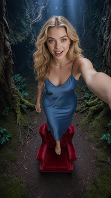
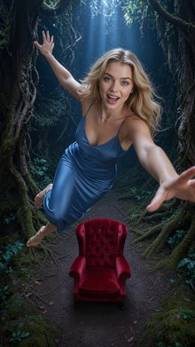
Front Medium Shot of the wizard from <IMAGE_1> positioned in the center of the frame as a blue magical barrier fades away. The wizard from <IMAGE_1> stands behind the circular stone table from <IMAGE_0>, looking directly forward at the camera with a weary, soot-smudged face. Wisps of black smoke and grey ash drift lazily around his head, and small glowing embers float in the air. The wizard appears exactly once in the frame, retaining his exact appearance, long gray hair and beard, and classic blue wizard robes with a pointed hat from <IMAGE_1>. In the background, the jagged volcanic glass cavern walls with far-off trickling orange lava flows from <IMAGE_0> are visible, while the foreground shows the surface of the circular stone table. The scene is illuminated with dim and moody ambient light, lit primarily by the low-frequency orange lava flows trickling down the volcanic walls in the far background and the glowing embers floating in the air. This image is styled as an IMAX photorealistic film still. Shot on ARRI Alexa 65 with IMAX 70mm film quality. Subject rendered with extreme crystal clarity, every detail hyper-defined and sharp. Photorealistic, high-fidelity texture. Ultra-sharp focus on subject, high micro-detail rendering. Freckles/skin pores visible, accurate skin texture, realistic fabric simulation. Massive dynamic range capture, deep shadows and bright highlights. Cinematic color science. Clean precise commercial color grade.
A front medium shot of the wizard from <IMAGE_1> positioned in the center of the frame, standing behind the circular stone table from <IMAGE_0>. The wizard retains his exact appearance, including his long gray hair, full beard, and classic blue robes with intricate gold embroidery, a brown leather belt, and a pointed hat. His face is now weary and heavily soot-smudged, looking directly forward at the camera. A translucent, shimmering blue magical barrier is actively fading away around him. Wisps of black smoke, grey ash, and small glowing embers drift lazily through the air around his head. The foreground features the rough surface of the circular stone table and the cracked stone floor from <IMAGE_0>. The background consists of the jagged volcanic glass cavern walls and far-off trickling orange lava flows from <IMAGE_0>. The scene is illuminated by dim, moody ambient light, primarily driven by the warm glow of the lava and floating embers. The image is styled as an IMAX photorealistic film still, shot on an ARRI Alexa 65 with IMAX 70mm film quality. It features extreme crystal clarity, ultra-sharp focus on the subject, high micro-detail rendering showing skin pores and realistic fabric textures, massive dynamic range with deep shadows, and a clean, precise commercial color grade.
An IMAX photorealistic film still of a Front Wide Shot showing the elderly wizard from <IMAGE_1> on the screen-left and the enormous demon from <IMAGE_2> on the screen-right facing each other across the circular stone table from <IMAGE_0>. The elderly wizard from <IMAGE_1> stands frame-left in a defensive stance, eyes wide with terror, retaining his exact appearance, long gray hair, beard, classic blue wizard robes, and pointed hat from <IMAGE_1>. The enormous demon from <IMAGE_2> stands frame-right, facing left, with its monstrous jaws wide open, retaining its exact appearance as a horned, glowing, magma-covered demon wearing primordial armor of hardened black magma plates from <IMAGE_2>. A massive wave of bright orange and white fire erupts from the demon's jaws, traveling horizontally across the stone table toward the wizard. The heavy stone chalice, carved from dark grey basalt with a glowing red liquid inside, sits on the table, enveloped by the intense heat distortion. The scene takes place in the expansive underground volcanic cavern from <IMAGE_0>, with its jagged black volcanic glass walls visible in the background. The scene is lit primarily by the intense bright orange and white light of the fire blast, casting harsh highlights and deep shadows, complemented by low-frequency orange lava flows on the walls and glowing embers in the air. Shot on ARRI Alexa 65 with IMAX 70mm film quality, subject rendered with extreme crystal clarity, hyper-defined details, and realistic fabric simulation.
An IMAX photorealistic film still featuring a front wide shot that combines the environments and characters from <IMAGE_0>, <IMAGE_1>, and <IMAGE_2> into a dramatic confrontation. The setting is the expansive underground volcanic cavern from <IMAGE_0>, retaining its jagged black volcanic glass walls, glowing orange lava flows, floating embers, and the central circular stone table surrounded by curved stone benches. On the screen-left stands the elderly wizard from <IMAGE_1>, retaining his exact appearance, including his long gray hair, full beard, pointed blue hat, and ornate blue robes with intricate gold embroidery and brown leather belt. He is now posed in a defensive stance, his eyes wide with terror, shrinking back from the attack. On the screen-right stands the enormous, horned demon from <IMAGE_2>, facing left towards the wizard. The demon retains its exact terrifying appearance, featuring its magma-glowing body, dark metallic armor plates, and clawed hands, but its monstrous jaws are now wide open. A massive, roaring wave of bright orange and white fire erupts from the demon's mouth, traveling horizontally across the stone table toward the wizard. Sitting directly on the center of the stone table is a newly added heavy stone chalice, carved from dark grey basalt and filled with a glowing red liquid. The chalice is enveloped by intense heat distortion and shimmering air from the passing fire blast. The scene is dynamically lit primarily by the intense bright orange and white light of the fire blast, casting harsh highlights and deep shadows across the cavern, the stone table, and the characters. Shot on ARRI Alexa 65 with IMAX 70mm film quality, the image features extreme crystal clarity, hyper-defined textures, realistic fabric simulation on the wizard's robes, and cinematic depth of field.

An IMAX photorealistic film still of a Front Wide Shot showing the elderly wizard from <IMAGE_1> and the massive demon from <IMAGE_2> seated opposite each other at the circular stone table in the underground cavern from <IMAGE_0>. The elderly wizard from <IMAGE_1> appears exactly once, seated on the screen-left side of the circular stone table; he looks screen-right and upward with a tense expression, retaining his gray hair, long beard, classic blue wizard robes, and pointed hat from <IMAGE_1>. Resting against the wizard's seat is a six-foot-tall gnarled wooden staff, made of dark oak with a sapphire crystal glowing faintly blue at the top. On the table sits a rough, dark grey basalt stone chalice with bubbling red liquid casting a faint red light upwards. Across the table, the colossal, fiery silhouette of the demon from <IMAGE_2> towers in the midground and background, its glowing magma chest radiating heat and light, and its body covered in the hardened black magma plates from <IMAGE_2>. The background shows the cavern walls with far-off trickling orange lava and floating glowing embers. The scene is illuminated by the dim, moody orange light of the lava and the intense glow from the demon's chest. Shot on ARRI Alexa 65 with IMAX 70mm film quality, subject rendered with extreme crystal clarity, deep shadows and bright highlights, cinematic color science, clean precise commercial color grade.
An IMAX photorealistic film still featuring a front wide shot set within the dark, jagged underground cavern from <IMAGE_0>. The scene is centered around the circular stone table and curved stone benches from <IMAGE_0>. Seated on the screen-left side of the stone bench is the elderly wizard from <IMAGE_1>, retaining his exact appearance: long gray hair, a thick gray beard, a tall blue pointed hat, and heavy blue robes adorned with intricate gold embroidery, cinched by a brown leather belt. He is looking screen-right and slightly upward with a tense, anxious expression. Resting against his stone seat is a six-foot-tall gnarled wooden staff made of dark oak, topped with a faintly glowing blue sapphire crystal. On the center of the stone table sits a rough, dark grey basalt stone chalice filled with a bubbling red liquid that casts a faint red light upwards onto the characters. Seated across the table on the right is the massive demon from <IMAGE_2>, its colossal size causing it to tower in the midground and background. The demon retains its large curved horns, glowing red eyes, clawed hands, and hardened black magma armor plates, with its chest cavity radiating intense, bright orange and red fiery light. The background features the cavern's deep shadows and trickling orange lava veins from <IMAGE_0>, now enhanced with floating glowing embers. The scene is illuminated by the dim, moody orange ambient light of the lava and the intense, dramatic heat glow from the demon's chest. Shot on ARRI Alexa 65 with IMAX 70mm film quality, featuring extreme crystal clarity, deep shadows, bright highlights, cinematic color science, and a clean precise commercial color grade.
Front Medium Shot. An elderly male wizard and a giant green ogre stand on the dirt pathway from <IMAGE_0> in the forest midground. The elderly male wizard from <IMAGE_1> stands in the midground center, facing forward toward the camera, holding the six-foot-tall gnarled wooden staff with both hands upright in front of him. He retains his exact appearance and wardrobe from <IMAGE_1>, including his long grey hair, full grey beard, and his long hooded crimson wizard robe with gold embroidered cuffs. Beside him, the giant green ogre from <IMAGE_2> stands tall, facing the camera. The giant green ogre retains his exact appearance and wardrobe from <IMAGE_2>, wearing a tattered loincloth and a heavy iron ring collar around his neck. Only the midground portion of the forest from <IMAGE_0> is visible, showing the dirt path and the trunks of gnarled oak trees, with the far background blurred. Late afternoon sunlight filters through the dense tree canopy, casting long diagonal golden rays and soft blue shadows across the characters and the forest floor.
A front medium shot set in the enchanting forest environment of <IMAGE_0>. In the midground, standing on the dappled dirt pathway, are two figures facing directly toward the camera. On the left is the elderly male wizard from <IMAGE_1>, retaining his exact appearance: long flowing grey hair, a full grey beard, and his long, hooded crimson wizard robe with gold embroidered cuffs and a knotted rope belt. He is now holding a six-foot-tall, gnarled wooden staff upright in front of him with both hands. Beside him stands the giant green ogre from <IMAGE_2>, retaining his exact appearance: a massive, muscular green physique, a heavy iron ring collar around his neck, and a tattered brown fur loincloth stitched with black cord. The background features the midground portion of the forest from <IMAGE_0>, showcasing the dirt path, the thick trunks of gnarled oak trees with exposed roots, and the large mossy rock, while the far background with the stone archway is softly blurred to create a shallow depth of field. Late afternoon sunlight filters through the dense tree canopy, casting long, diagonal golden volumetric rays and soft blue shadows across the characters and the forest floor.

Front Medium Two Shot of the tomato woman from <IMAGE_1> and the red horned demon from <IMAGE_2> standing on the cracked concrete sidewalk from <IMAGE_0> under the warm amber glow of the overhead streetlamp. Frame-left, the tomato woman from <IMAGE_1> appears exactly once, standing in the midground with her shoulders squared and facing frame-right towards the demon; she retains her exact appearance as a red spherical anthropomorphic tomato in CGI style and wears her vibrant crimson silk slip dress with gold chainlink belt from <IMAGE_1>, holding a small, plump, elongated red San Marzano tomato in her right hand at waist height. Frame-right, the red, horned male demon from <IMAGE_2> appears exactly once, standing in the midground and facing frame-left towards the tomato woman, with his hands tucked into his suit pockets; he retains his exact appearance and wears his tailored charcoal gray wool suit with a white unbuttoned shirt from <IMAGE_2>. The background features the weathered brick apartment building facade from <IMAGE_0>. The scene is set at night, illuminated by the warm amber glow of the overhead streetlamp and the distant cool glare of city streetlights. Captured in a realistic photographic style.
A realistic photographic front medium two-shot set on the cracked concrete sidewalk at night from <IMAGE_0>. In the midground on the left, the anthropomorphic tomato woman from <IMAGE_1> stands with her shoulders squared, facing right. She retains her exact CGI-style red spherical tomato head with green stems, large expressive eyes, and her vibrant crimson silk slip dress with a gold chainlink belt and red heels. In her right hand, held at waist height, she now holds a small, plump, elongated red San Marzano tomato. On the right side of the frame, the red, horned male demon from <IMAGE_2> stands facing left towards her. He retains his exact appearance, including his textured red skin, horns, pointed ears, and sinister grin, wearing the same tailored charcoal gray wool suit and unbuttoned white shirt from <IMAGE_2>, but his pose is modified so that his hands are tucked into his suit pockets. The background features the weathered brick apartment building facade from <IMAGE_0>. The scene is illuminated by the warm amber glow of the overhead streetlamp and the distant cool glare of city streetlights, casting atmospheric shadows on the cracked sidewalk and highlighting the textures of the characters' clothing.
A Front Medium Close Up of the red-skinned demon from <IMAGE_1> standing on the dark asphalt street from <IMAGE_0> under the cover of night. The red-skinned demon from <IMAGE_1> appears exactly once, positioned in the midground, with his torso and head facing forward but his wide eyes staring downward toward the pavement. He retains his exact appearance and wardrobe from <IMAGE_1>, including his vibrant red skin, curved black horns, and his charcoal gray wool suit jacket worn over a crisp white button-down shirt. On the wet asphalt near his feet, a small, plump, elongated San Marzano tomato with glossy, deep red skin and a small green stem cap is visible on the ground. Only the dark asphalt street and the concrete curb from the environment in <IMAGE_0> are visible, with the brick building and sidewalk excluded from this close-up view. The scene is illuminated by the warm amber glow of the overhead streetlamp casting onto the demon from above and the distant cool glare of city streetlights. Captured in a realistic, cinematic photographic style.
A cinematic, photorealistic front medium close-up shot featuring the red-skinned demon from <IMAGE_1> standing on the dark asphalt street from <IMAGE_0> at night. The composition is tightly cropped to show only the dark, wet asphalt street and the concrete curb from <IMAGE_0>, completely excluding the brick building and sidewalk. The demon is positioned in the midground, retaining his exact appearance and wardrobe from <IMAGE_1>, including his vibrant red skin, curved black horns, pointed ears, sinister smile, and his charcoal gray wool suit jacket worn over a crisp white button-down shirt. His torso and head face forward, but his head is tilted down, with his wide eyes staring intensely at the pavement. On the wet asphalt near his feet rests a small, plump, elongated San Marzano tomato with glossy, deep red skin and a small green stem cap. The scene is illuminated by the warm amber glow of the overhead streetlamp from <IMAGE_0>, casting dramatic lighting onto the demon from above, contrasted by the distant cool glare of city streetlights in the softly blurred background. The image features a shallow depth of field, sharp focus on the demon and the tomato, and rich, atmospheric night lighting.
Front Medium Two Shot of the black-haired man from <IMAGE_1> and the brown-skinned woman from <IMAGE_2> standing on the wide dirt path from <IMAGE_0> in the forest. In the foreground, the brown-skinned woman from <IMAGE_2> stands facing south toward the camera, her hands resting confidently on her hips, her body fully facing forward. She appears exactly once in the frame, retaining her exact appearance, long curly dark hair, and wardrobe from <IMAGE_2> including her emerald green velvet crop top and high-waisted acid-wash denim shorts. Two meters behind her in the midground center, the tall black-haired bearded man from <IMAGE_1> stands upright facing south, his arms hanging straight at his sides. He appears exactly once in the frame, retaining his exact appearance, facial hair, and wardrobe from <IMAGE_1> including his dark blue tactical zip-up hoodie over a charcoal gray t-shirt. On his waist, a futuristic plasma sword hilt from <IMAGE_1> is secured inside a holster. The environment shows the central dirt pathway lined with gnarled oak trees, with late afternoon sunlight filtering through the dense tree canopy, casting long diagonal golden rays and soft blue shadows across the forest floor. The image is captured with the photographic styling of <IMAGE_0>.
A front medium two-shot set on the wide dirt path within the lush forest environment of <IMAGE_0>. In the foreground, the brown-skinned woman from <IMAGE_2> stands facing south toward the camera, her hands resting confidently on her hips and her body fully facing forward. She retains her exact appearance, long curly dark hair, and wardrobe from <IMAGE_2>, wearing the emerald green velvet crop top and high-waisted acid-wash denim shorts. Two meters behind her in the midground center, the tall black-haired bearded man from <IMAGE_1> stands upright, also facing south, with his arms hanging straight at his sides. He retains his exact appearance, facial hair, and wardrobe from <IMAGE_1>, wearing the dark blue zip-up hoodie over a charcoal gray t-shirt and dark jeans. Secured inside a holster on his waist is a futuristic, metallic plasma sword hilt with a subtle glowing accent. The background features the central dirt pathway lined with gnarled oak trees and the mossy stone archway from <IMAGE_0>. The scene is illuminated by late afternoon sunlight filtering through the dense tree canopy, casting long diagonal golden rays and soft blue shadows across the forest floor, perfectly matching the photographic styling, lighting, and atmosphere of <IMAGE_0>.
Front Medium Two Shot of the red tomato-headed woman from <IMAGE_1> and the green broccoli-headed man from <IMAGE_2> on the pool deck of the villa in <IMAGE_0>. The red tomato-headed woman from <IMAGE_1> stands upright in the foreground on the blue-tiled pool deck near the edge of the sparkling swimming pool, facing frame-right toward the green broccoli-headed man from <IMAGE_2> with empty hands. She appears exactly once in the frame, retaining her exact appearance and wardrobe from <IMAGE_1>, including her red tomato head, vibrant crimson silk slip dress with a cowl neckline and spaghetti straps, and delicate gold waist chain. The green broccoli-headed man from <IMAGE_2> stands two meters away in the midground near the poolside sun loungers, facing frame-left toward the red tomato-headed woman from <IMAGE_1> with empty hands. He appears exactly once in the frame, retaining his exact appearance and wardrobe from <IMAGE_2>, including his green, bumpy, broccoli head, tailored emerald green linen blazer, and slim-fit trousers. In the midground, an empty wicker bread basket rests in the exact center of the outdoor dining table, and a small, round white ceramic olive oil bowl sits on the left side of the dining table next to a white linen napkin. The scene features the blue-tiled swimming pool on the left, the open deck, and the dining table against the right wall, with the cabana in the background. Bright golden hour afternoon sunlight streams from the upper left, casting warm amber highlights and long soft shadows across the pool deck.
A front medium two-shot composition set on the sunlit pool deck of the villa seen in <IMAGE_0>. In the foreground, standing upright on the blue-tiled section of the deck near the edge of the sparkling swimming pool, is the red tomato-headed woman from <IMAGE_1>. She is facing frame-right with empty hands, retaining her exact appearance and wardrobe from <IMAGE_1>, including her red tomato head with a green stem, large expressive eyes, vibrant crimson silk slip dress with a cowl neckline and spaghetti straps, delicate gold waist chain, and gold strappy sandals. In the midground, approximately two meters away near the poolside sun loungers, stands the green broccoli-headed man from <IMAGE_2>. He is facing frame-left toward the woman with empty hands, retaining his exact appearance and wardrobe from <IMAGE_2>, including his green, bumpy broccoli head, black sunglasses, tailored emerald green linen blazer, white collared shirt, slim-fit trousers, and brown loafers. On the wooden dining table against the white wall to the right, an empty wicker bread basket rests in the exact center, and a small, round white ceramic olive oil bowl sits on the left side of the table next to a white linen napkin. The scene maintains the blue-tiled swimming pool on the left, the open wooden deck, the dining table, and the curtained cabana in the background. Bright golden hour afternoon sunlight streams from the upper left, casting warm amber highlights and long, soft shadows across the pool deck and the characters.

Left Medium Shot. Tomatina from <IMAGE_1> is sitting at the outdoor dining table from <IMAGE_0> in the midground, while Brock bro from <IMAGE_2> stands beside her with empty hands. Tomatina from <IMAGE_1> appears exactly once, sitting at the dining table, looking forward with her red tomato-head and wearing her crimson silk slip dress with spaghetti straps. A white linen napkin is laid across her lap, and she holds the wicker bread basket containing sliced baguettes in her lap with both hands. Brock bro from <IMAGE_2> appears exactly once, standing next to her, facing toward her, dressed in his emerald green linen suit and white open-collar shirt. On the left side of the dining table sits the ceramic olive oil bowl. The frame captures the midground of the outdoor pool deck from <IMAGE_0>, showing the dining table and chairs with the pool edge visible on the left. Bright golden hour afternoon sunlight streams from the upper left, casting warm amber highlights and long soft shadows across the characters and the scene.
A left medium shot capturing the midground of the sunlit outdoor pool deck from <IMAGE_0>. The scene focuses on the wooden dining table and chairs situated next to the white stucco wall and draped pergola, with the edge of the blue swimming pool visible on the left side of the frame. Sitting at the dining table is the 3D character Tomatina from <IMAGE_1>, appearing exactly once. She is seated in a wooden chair, looking directly forward, retaining her red tomato head with a green stem and her shiny crimson silk slip dress with spaghetti straps and gold chain belts. A white linen napkin is laid across her lap, and she is holding a wicker bread basket filled with sliced baguettes in her lap with both hands. Standing beside her is the 3D character Brock bro from <IMAGE_2>, also appearing exactly once. He is standing next to her chair, facing toward her, with his green hands empty at his sides. He retains his textured broccoli head, black sunglasses, emerald green linen suit, white open-collar shirt, and brown loafers. On the left side of the wooden dining table sits a small ceramic olive oil bowl. The scene is illuminated by the bright golden hour afternoon sunlight streaming from the upper left, casting warm amber highlights and long, soft shadows across the wooden deck, the characters, and the white wall, perfectly matching the lighting and environment of <IMAGE_0>.
Left Medium Shot of the pool deck from <IMAGE_0>. The tomato-headed woman from <IMAGE_1> stands in the foreground frame-right, with her body and head turned in profile facing screen-left. The glossy purple eggplant from <IMAGE_2> stands in the midground frame-left, facing screen-right toward her. Both characters have empty hands. On the dining table from <IMAGE_0>, which is visible in the midground, sits a wicker bread basket filled with sliced baguettes and a small ceramic olive oil bowl with a blue pattern on the rim. The tomato-headed woman retains her exact appearance and wardrobe from <IMAGE_1>, including her red tomato head, crimson silk slip dress with spaghetti straps, and gold waist chain. The glossy purple eggplant retains his exact appearance and wardrobe from <IMAGE_2>, including his purple glossy body and violet velvet smoking jacket with black satin lapels. The background shows the wooden pool deck and elements of the villa from <IMAGE_0>. Bright golden hour afternoon sunlight streams from the upper left, casting warm amber highlights and long soft shadows across the scene, captured in a clean, high-resolution photographic style.
A clean, high-resolution photographic medium shot set on the sunlit wooden pool deck from <IMAGE_0>. In the right foreground, the tomato-headed woman from <IMAGE_1> stands in a full left profile view, her body and head turned facing screen-left. She retains her exact appearance, including the round red tomato head with a green stem, crimson silk slip dress with spaghetti straps, gold waist chain, and gold strappy heels. Her hands are empty and relaxed by her sides. In the left midground, the eggplant character from <IMAGE_2> stands facing screen-right, looking directly toward her. He maintains his exact appearance and wardrobe, featuring the glossy purple eggplant head with sunglasses resting on top, the violet velvet smoking jacket with black satin lapels, black shirt, black trousers, gold chain, black shoes, and the green vines hanging from his sleeves. His hands are also empty. Behind them, the wooden dining table from <IMAGE_0> is visible under the white canopy, now featuring a wicker bread basket filled with sliced baguettes and a small ceramic olive oil bowl with a blue pattern on its rim. The background retains the blue swimming pool, stone coping, white lounge chairs, and white villa wall from <IMAGE_0>. Bright golden hour afternoon sunlight streams from the upper left, casting warm amber highlights and long soft shadows across the wooden deck and the characters.
Front Medium Two Shot of a slender blonde man and a tall muscular bearded man at the bar counter in the nightclub from <IMAGE_0>. Frame-left in the foreground, the slender blonde man from <IMAGE_1> stands facing the bar with empty hands, his body oriented frame-right towards the bartender. He retains his exact appearance from <IMAGE_1>, including his blonde hair, slender build, and his sleeveless metallic silver mesh tank top. Frame-right in the midground, the tall muscular bearded man from <IMAGE_2> stands behind the long wooden bar counter on the equipment side, with his torso facing the slender blonde man and his hands resting flat on the wooden bar surface. The tall muscular bearded man from <IMAGE_2> retains his exact muscular build, beard, and facial features from <IMAGE_2>. The background features the polished wooden bar counter and the glowing glass shelves with liquor bottles from <IMAGE_0>, while the far exit door remains off-frame. The scene is illuminated by dim, moody nighttime interior lighting dominated by pulsing purple and cyan laser lights, with warm ambient spotlights focused over the bar counter.
A front medium two-shot set inside the atmospheric nightclub from <IMAGE_0>. In the foreground on the frame-left, the slender blonde man from <IMAGE_1> stands on the customer side of the bar, facing frame-right towards the bartender with his empty hands relaxed by his sides. He retains his exact appearance, including his blonde hair, slender build, black leather pants, chunky pink sneakers, and sleeveless metallic silver mesh tank top. In the midground on the frame-right, the tall, muscular, bearded man from <IMAGE_2> stands behind the long wooden bar counter acting as the bartender. His torso faces the blonde man, and his hands rest flat on the polished wooden bar surface. He retains his exact muscular build, thick beard, heavily tattooed arms, black short-sleeved button-up shirt, black pants, and brown boots from <IMAGE_2>. The background features the polished wooden bar counter and the glowing glass shelves stocked with liquor bottles from <IMAGE_0>, while the far exit door remains off-frame. The scene is illuminated by dim, moody nighttime interior lighting dominated by the pulsing purple ambient light and cyan laser beams from the ceiling in <IMAGE_0>, with warm ambient spotlights focused directly over the bar counter to highlight the two men.

Front Medium Two Shot of the blonde man in mesh top from <IMAGE_1> and the bald bouncer from <IMAGE_2> at the entrance of the club from <IMAGE_0>. The blonde man in mesh top from <IMAGE_1> stands in the foreground, positioned frame-left, past the black velvet rope. He faces frame-right at close range towards the bald bouncer, with his empty hands visible. The bald bouncer from <IMAGE_2> stands in the background, positioned frame-right, with both feet on the linoleum floor near the velvet rope; his torso is angled toward frame-left, and he holds a stainless-steel shaker out of frame. The blonde man retains his exact appearance and wardrobe from <IMAGE_1>, including his slender build, blonde hair, and sleeveless metallic silver mesh tank top. The bald bouncer retains his exact appearance from <IMAGE_2>, including his bald head, muscular build, and tanned skin, showing a stern expression. The scene is set in the southwest corner of the club with the velvet rope, chrome stanchions, and linoleum floor from <IMAGE_0> visible in frame, while the distant bar counter is excluded. The scene is illuminated by dim interior lighting dominated by pulsing purple and cyan laser lights with warm ambient spotlights casting a hazy glow over the characters.
A front medium two-shot set in the atmospheric nightclub entrance from <IMAGE_0>, capturing a tense interaction between two figures. In the foreground on the frame-left, standing just past the black velvet rope and chrome stanchions, is the young blonde man from <IMAGE_1>. He retains his exact slender build, short blonde hair, metallic silver mesh tank top, tight black leather pants with ankle zippers, and chunky pink sneakers. He is positioned facing frame-right at close range towards the bouncer, with his empty hands clearly visible at his sides. In the background on the frame-right stands the bald bouncer from <IMAGE_2>, retaining his massive muscular build, tanned skin, black tank top, black sweatpants, and black sneakers. The bouncer has a stern, serious expression, with his torso angled toward frame-left to face the blonde man. One of the bouncer's arms is extended, holding a stainless-steel cocktail shaker that is partially cut off at the right edge of the frame. The setting features the exposed brick wall, dark wooden door, and polished wooden floor from <IMAGE_0>, but the distant bar counter is completely excluded from the composition. The scene is illuminated by dim, hazy interior lighting dominated by vibrant, pulsing purple and cyan laser lights streaking diagonally across the upper background, while warm ambient spotlights cast a dramatic, atmospheric glow over the characters. The reflective surfaces of the floor, the bouncer's shaker, and the blonde man's mesh top catch the vivid neon club lighting.

Left Medium Shot of the tall armored soldier from <IMAGE_1> centered on the gravel rooftop from <IMAGE_0>. The tall armored soldier is standing in the center of the frame on the dark, gritty gravel-strewn rooftop, oriented three-quarters frame-left. He is holding a glowing orange sword high over his shoulder with both hands. He appears exactly once in the frame, retaining his exact appearance from <IMAGE_1>, including his matte-gray carbon-fiber tactical armor and dark full-face stealth helmet with a thin, horizontal glowing orange visor strip. The weathered red-brick chimney stack from <IMAGE_0> is visible on frame-right. In the background, the distant city lights are blurred out of focus. The scene is darkly lit, dominated by the bright orange light of the glowing blade casting strong, vibrant orange reflections off his matte-gray armor and helmet visor. Cinematic-modern film still, shot on ARRI Alexa 65 with IMAX 70mm film quality, subject rendered with extreme crystal clarity, every detail hyper-defined and sharp, photorealistic, high-fidelity texture, ultra-sharp focus on subject, massive dynamic range capture with deep shadows and bright highlights, cinematic color science, clean precise commercial color grade.
A cinematic, left medium shot set on the coastal terrace from <IMAGE_0>, which has been transformed into a dark, gritty gravel rooftop at night. The tall armored soldier from <IMAGE_1> stands prominently in the center of the frame, oriented three-quarters facing left. He retains his exact appearance from <IMAGE_1>, wearing the matte-gray carbon-fiber tactical armor, black undersuit, and dark full-face stealth helmet with its thin, horizontal glowing orange visor strip. He is dynamically posed, holding a brightly glowing orange energy sword high over his shoulder with both hands. The intense, vibrant orange light from the glowing blade dominates the dark scene, casting strong, dramatic orange reflections across his matte-gray armor and helmet visor. The environment retains the wooden pergola and vibrant purple bougainvillea flowers from <IMAGE_0>, but the scene is now shrouded in nighttime darkness. The white buildings with red tile roofs and the sea from <IMAGE_0> remain in the background, now illuminated by distant, out-of-focus city lights. A weathered red-brick chimney stack has been added to the right side of the frame. The image is rendered as a modern film still, shot on an ARRI Alexa 65 with IMAX 70mm film quality, featuring a massive dynamic range, deep shadows, and a clean, precise commercial color grade. The armored subject is in ultra-sharp focus with hyper-defined textures, while the background features a shallow depth of field with beautiful bokeh.

A Left Medium Shot of the tomato woman from <IMAGE_1> standing on screen-right in the high-security vault chamber from <IMAGE_0> at night. The tomato woman from <IMAGE_1>, appearing exactly once in the frame, stands on screen-right with her torso angled toward screen-left and her head turned toward the viewer with an unhinged, wild grin. Her red-skinned arm is pulled back behind her head, holding the explosive tomato, which is a round, fist-sized red tomato with a faint, pulsating red LED light embedded under its skin. She retains her exact appearance and wardrobe from <IMAGE_1>, including her red, smooth, humanoid anthropomorphic tomato skin and shiny red latex catsuit. The background of the frame features the steel-paneled walls and crisscrossing thin red laser tripwires of the vault from <IMAGE_0>, with the rest of the room cast in deep shadow. A single overhead white spotlight shines down, creating high-contrast security lighting with deep shadows and bright highlights on her figure. Cinematic film still style, shot on ARRI Alexa 65 with IMAX 70mm film quality, extreme crystal clarity, photorealistic texture, hyper-defined sharp focus, massive dynamic range, and clean commercial color grade.
A cinematic left medium shot set within the high-security vault chamber from <IMAGE_0> at night. The anthropomorphic tomato woman from <IMAGE_1> stands on the screen-right side of the frame, appearing exactly once. She retains her exact appearance and wardrobe from <IMAGE_1>, including her large red tomato head with green leafy stems, her smooth, shiny red latex-like skin, her brown utility belt with pouches, and her red boots. Her torso is angled toward screen-left, but her head is turned to face the viewer directly, sporting an unhinged, wild grin. Her right arm is pulled back dynamically behind her head, holding a round, fist-sized red explosive tomato that features a faint, pulsating red LED light glowing beneath its skin. The background features the dark steel-paneled walls, the textured metal floor, the illuminated glass display case on its pedestal, and the crisscrossing thin red laser tripwires from <IMAGE_0>. The rest of the room is cast in deep shadow, illuminated primarily by the single overhead white spotlight from <IMAGE_0>, which creates high-contrast security lighting with deep shadows and bright, glossy highlights on the tomato woman's figure. The image is rendered in a cinematic film still style, shot on an ARRI Alexa 65 with IMAX 70mm film quality, boasting extreme crystal clarity, photorealistic textures, hyper-defined sharp focus, massive dynamic range, and a clean commercial color grade.
Front Medium Shot of the blond short male man from <IMAGE_1> and the black woman with long silver hair from <IMAGE_2> sitting side-by-side on the edge of the steel jail bunk bed from <IMAGE_0>. The blond short male man appears exactly once on the screen-left of the frame, sitting on the bunk bed, looking towards the woman next to him with a gossipy, expressive face; he retains his exact appearance and wardrobe from <IMAGE_1>, wearing the orange county jail-issued bantam jumpsuit loosely draped off one shoulder. The black woman with long silver hair appears exactly once in the center of the frame, sitting on the bunk bed next to him, looking straight ahead with a flat, analytical expression; she retains her exact appearance and wardrobe from <IMAGE_2>, wearing the orange county jail-issued bantam jumpsuit neatly zipped to the neck. Both characters are viewed through the vertical steel bars of the jail cell in <IMAGE_0> which run vertically across the foreground of the frame. The scene is set inside the concrete jail cell from <IMAGE_0> under harsh, cold overhead fluorescent lighting casting flat, sterile shadows across the gray concrete surfaces. Cinematic-modern style: film still, shot on ARRI Alexa 65 with IMAX 70mm film quality. Subject rendered with extreme crystal clarity, every detail hyper-defined and sharp. Photorealistic, high-fidelity texture, ultra-sharp focus on subject, high micro-detail rendering, realistic skin texture, realistic fabric simulation, massive dynamic range capture, cinematic color science, clean precise commercial color grade.
A cinematic, front medium shot set inside the stark concrete jail cell from <IMAGE_0>, viewed through the vertical steel bars of the cell door that run across the foreground. Sitting side-by-side on the edge of the lower steel bunk bed are the two individuals. On the screen-left is the young blond man from <IMAGE_1>, retaining his exact appearance and wardrobe, wearing the orange county jail-issued bantam jumpsuit loosely draped off one shoulder. He is turned to his right, looking towards the woman next to him with a highly expressive, gossipy face, featuring raised eyebrows, a slight smirk, and wide eyes. Sitting next to him in the center of the frame is the Black woman with long silver hair and a holographic crown from <IMAGE_2>. She retains her exact appearance and wardrobe, wearing her orange county jail-issued bantam jumpsuit neatly zipped to the neck. She is looking straight ahead with a flat, analytical expression. The scene is illuminated by the harsh, cold overhead fluorescent lighting from <IMAGE_0>, casting flat, sterile shadows across the gray concrete surfaces and the subjects. The image is rendered in a cinematic-modern style, resembling a film still shot on an ARRI Alexa 65 with IMAX 70mm film quality. The subjects are rendered with extreme crystal clarity, ultra-sharp focus, high micro-detail rendering, realistic skin texture, and realistic fabric simulation, featuring massive dynamic range capture, cinematic color science, and a clean, precise commercial color grade.
A Front Wide Shot of a red tomato woman from <IMAGE_1> reclining on the white-cushioned wooden lounge chair in the center midground of the tropical beach from <IMAGE_0>. The red tomato woman from <IMAGE_1> is positioned in the center of the frame, reclining comfortably on the lounge chair; she holds a tall, curved hurricane glass filled with a layered orange and yellow tropical cocktail in her left hand, and raises a massive, fist-sized diamond toward the golden sun with her right hand, her face tilted slightly upward with a confident, relaxed expression. She retains her exact appearance and wardrobe from <IMAGE_1>, including her red spherical tomato head with a green stem, a sparkling gold sequin bikini, and a sheer white silk sarong tied at her waist. The scene features the sandy beach foreground and the calm turquoise ocean stretching to the horizon behind her from <IMAGE_0>. The scene is illuminated by midday, bright, intense, direct golden sunlight with clear blue skies and no cloud cover, casting sharp, defined shadows. Change the image style to a film still. Shot on ARRI Alexa 65 with IMAX 70mm film quality. Subject rendered with extreme crystal clarity, every detail hyper-defined and sharp. Photorealistic, high-fidelity texture. Ultra-sharp focus on subject, high micro-detail rendering. Freckles/skin pores visible, accurate skin texture, realistic fabric simulation. Massive dynamic range capture, deep shadows and bright highlights. Cinematic color science. Clean precise commercial color grade.
A front wide shot film still combining the elements of <IMAGE_0> and <IMAGE_1>. The scene is set on the tropical beach from <IMAGE_0>, featuring the textured sandy foreground, the calm turquoise ocean stretching to the horizon, and the clear blue sky. In the center midground, the wooden lounge chair with white cushions and its small side table remain. Reclining comfortably on the lounge chair is the tomato-headed woman from <IMAGE_1>. She retains her exact appearance and wardrobe: a red spherical tomato head with a green leafy stem, large expressive eyes, a sparkling gold sequin bikini top, and a sheer white silk sarong tied at her waist. Her red skin is now rendered with photorealistic, high-fidelity texture, displaying visible freckles, skin pores, and realistic subsurface scattering. Her face is tilted slightly upward toward the sun with a confident, relaxed expression. In her left hand, she holds a tall, curved hurricane glass filled with a layered orange and yellow tropical cocktail. In her right hand, she raises a massive, fist-sized, brilliantly faceted diamond toward the golden sun, catching the intense light. The scene is illuminated by bright, intense, direct midday golden sunlight with no cloud cover, casting sharp, defined shadows on the sand. The image is styled as a cinematic film still shot on an ARRI Alexa 65 with IMAX 70mm film quality, featuring a massive dynamic range, deep shadows, bright highlights, cinematic color science, and a clean, precise commercial color grade. The subject is rendered with extreme crystal clarity and ultra-sharp focus, highlighting the realistic fabric simulation of her sarong and the sparkling details of the sequins and diamond.
Over the shoulder shot looking over the right shoulder of the woman in the gold jacket from <IMAGE_1> in the foreground screen-left, pointing a sleek rapier with a glowing magenta blade directly toward the bearded man from <IMAGE_2> who stands calmly in the midground, centered on the stone floor of the cathedral from <IMAGE_0>. The woman in the gold jacket, from <IMAGE_1>, is angled away from the camera, positioned frame-left in the foreground, showing her right shoulder and back, holding the rapier in her right hand as the glowing magenta beam of the blade extends across the frame. She retains her exact appearance and wardrobe from <IMAGE_1>, including her long curly hair and her metallic gold cropped puffer jacket worn over a black mesh sleeveless top. The bearded man from <IMAGE_2> is centered in the midground, facing toward the camera with a calm, neutral expression, retaining his exact appearance from <IMAGE_2> including his black hair, beard, and his high-collared sleek gray tech-fabric vest worn over a tight-fitting black long-sleeve athletic shirt with charcoal-gray cargo trousers. The wide stone-tiled floor, crumbling gothic pillars, and massive shattered stained-glass windows from <IMAGE_0> are visible in the background and midground. The scene is illuminated by late afternoon light with shafts of warm, dusty golden sunlight streaming diagonally through the fractured stained-glass windows, creating dramatic high-contrast beams across the midground. Photorealistic film still. Shot on ARRI Alexa 65 with IMAX 70mm film quality. Subject rendered with extreme crystal clarity, every detail hyper-defined and sharp, photorealistic, high-fidelity texture, massive dynamic range, cinematic color science.
A photorealistic, cinematic over-the-shoulder shot set within the dusty, ruined gothic cathedral environment from <IMAGE_0>. In the left foreground, the woman from <IMAGE_1> is positioned with her back and right shoulder angled toward the camera. She retains her exact appearance and wardrobe: voluminous dark curly hair, a metallic gold cropped puffer jacket, and a black mesh sleeveless top. She is actively holding a sleek rapier in her right hand, pointing it directly toward the midground. The rapier's blade is a brilliantly glowing, neon magenta energy beam that casts a soft pink ambient light on her gold jacket and extends diagonally across the frame. In the center midground, the bearded man from <IMAGE_2> stands calmly on the wide stone-tiled floor, facing the camera with a neutral expression. He retains his exact outfit: dark hair and beard, a high-collared gray tech-fabric vest over a tight black long-sleeve athletic shirt, charcoal-gray cargo trousers, black fingerless gloves, and black shoes. The background features the crumbling gothic pillars and massive shattered stained-glass windows from <IMAGE_0>. The scene is illuminated by late afternoon light, with dramatic shafts of warm, dusty golden sunlight streaming diagonally through the fractured windows, creating high-contrast volumetric beams that cut across the midground and illuminate the figures. Shot on an ARRI Alexa 65 with IMAX 70mm film quality, featuring extreme crystal clarity, hyper-defined textures on the stone and clothing, massive dynamic range, and cinematic color science.

A cinematic-modern Front Close Up film still, shot on ARRI Alexa 65 with IMAX 70mm film quality. The woman from <IMAGE_1> is in the midground, centered, staring down screen-left at her empty, open hands in complete, wide-eyed disbelief. Her mouth is slightly open in shock. She appears exactly once in the frame. Only the upper torso and head of the woman from <IMAGE_1> are visible as she looks down. She retains her exact appearance and wardrobe from <IMAGE_1>, including her long curly hair, brown skin, and the metallic gold cropped puffer jacket worn over a black mesh sleeveless top. In the background, the fractured stained-glass windows of the futuristic gothic cathedral from <IMAGE_0> are visible but softly blurred. The lighting is late afternoon, with shafts of warm, dusty golden sunlight streaming diagonally through the fractured stained-glass windows, creating dramatic high-contrast beams across the midground and casting warm highlights on her face. Extreme crystal clarity, every detail hyper-defined and sharp, photorealistic, high-fidelity texture, ultra-sharp focus on subject, high micro-detail rendering, skin pores visible, accurate skin texture, realistic fabric simulation, massive dynamic range capture with deep shadows and bright highlights, and a clean, precise commercial color grade.
A cinematic front close-up film still, shot on an ARRI Alexa 65 with IMAX 70mm film quality, featuring the woman from <IMAGE_1> positioned in the center of the frame. Only her upper torso and head are visible as she stares down screen-left at her empty, open hands held in front of her. Her expression is one of complete, wide-eyed disbelief, her mouth slightly open in shock. She retains her exact appearance and wardrobe from <IMAGE_1>, including her long, dark, voluminous curly hair, brown skin, the metallic gold cropped puffer jacket, and the black mesh sleeveless top underneath. She appears exactly once in the frame. The background features the interior of the gothic cathedral from <IMAGE_0>, specifically focusing on the tall, fractured stained-glass windows, which are softly blurred to create a shallow depth of field. The lighting perfectly matches the late afternoon atmosphere of <IMAGE_0>, with dramatic, dusty shafts of warm golden sunlight streaming diagonally through the fractured glass. These high-contrast beams cut across the midground, illuminating floating dust motes and casting warm, glowing highlights on the woman's face and jacket. The image features extreme crystal clarity, ultra-sharp focus on the subject, high micro-detail rendering showing skin pores and realistic fabric simulation, a massive dynamic range with deep shadows and bright highlights, and a clean, precise commercial color grade.

Front Close Up of the blond man from <IMAGE_1> standing in the workshop from <IMAGE_0>. The blond man from <IMAGE_1> is positioned frame-left in the close-up, appearing exactly once in the frame. His body is slightly angled towards the center of the frame, with his head tilted down and his gaze directed downwards towards the wooden workbench. He has a contemplative, focused expression. He retains his exact appearance and wardrobe from <IMAGE_1>, including his short blond hair, and the cropped, sheer mesh black tunic under a structured purple leather doublet with metallic gold trim. Only his upper torso, shoulders, and head are visible in the close-up shot. Behind him, the cluttered wooden workbench with glass beakers and candles from <IMAGE_0> is visible but softly blurred, while the background stone wall and shelves filled with jars are out of focus. The scene is illuminated by dim, atmospheric workshop lighting, with warm amber candlelight glowing from the workbench and a cool blue dusk light filtering from above. This is an IMAX photorealistic film still. Shot on ARRI Alexa 65 with IMAX 70mm film quality. Subject rendered with extreme crystal clarity, every detail hyper-defined and sharp. Photorealistic, high-fidelity texture. Ultra-sharp focus on subject, high micro-detail rendering. Freckles/skin pores visible, accurate skin texture, realistic fabric simulation. Massive dynamic range capture, deep shadows and bright highlights. Cinematic color science. Clean precise commercial color grade.
A front close-up shot of the blond man from <IMAGE_1>, now positioned frame-left within the rustic stone workshop environment from <IMAGE_0>. The man appears exactly once in the frame, with only his head, shoulders, and upper torso visible. His body is slightly angled towards the center of the frame, his head tilted down, and his gaze directed downwards with a contemplative, focused expression. He retains his exact appearance and wardrobe from <IMAGE_1>, including his short blond hair, the cropped sheer mesh black tunic, and the structured purple leather doublet with metallic gold trim. He is rendered with extreme crystal clarity, featuring high micro-detail rendering that reveals accurate skin texture, visible freckles, skin pores, and realistic fabric simulation. Behind him, the cluttered wooden workbench from <IMAGE_0>, complete with its glass beakers, flasks, and glowing candles, is visible but softly blurred with a shallow depth of field. The background stone walls and wooden shelves filled with jars are completely out of focus with creamy bokeh. The scene is illuminated by dim, atmospheric workshop lighting, seamlessly blending the warm amber candlelight glowing from the workbench with a cool blue dusk light filtering from above. This IMAX photorealistic film still is captured on an ARRI Alexa 65 with IMAX 70mm film quality, showcasing a massive dynamic range, deep shadows, bright highlights, cinematic color science, and a clean, precise commercial color grade.

Drone Shot looking down at the rooftop from <IMAGE_0>. The female anthropomorphic tomato from <IMAGE_1> appears small on the concrete rooftop corner screen-right in the midground. The sweeping view expands to show the massive, glowing metropolis skyline stretching into the background. The female anthropomorphic tomato from <IMAGE_1> stands on the gravel roof, looking out toward the distant skyline, positioned in the midground. She retains her exact appearance and wardrobe from <IMAGE_1>, including her red, spherical, glossy body and her dark crimson leather jumpsuit with gold zippers and utility belt. The flat gravel-topped rooftop, low concrete parapet wall, and ventilation pipes from <IMAGE_0> are visible, with the vast glowing city skyline filling the background. The scene is illuminated by cool starlight and thousands of distant amber city lights, casting high-contrast edge highlights. Cinematic-modern style. Change the image style to an IMAX photorealistic film still. Shot on ARRI Alexa 65 with IMAX 70mm film quality. Subject rendered with extreme crystal clarity, every detail hyper-defined and sharp. Photorealistic, high-fidelity texture. Ultra-sharp focus on subject, high micro-detail rendering. Realistic fabric simulation. Massive dynamic range capture, deep shadows and bright highlights. Cinematic color science. Clean precise commercial color grade.
A sweeping, high-angle drone shot looking down at the expansive gravel rooftop from <IMAGE_0>, now rendered as a breathtaking IMAX photorealistic film still shot on an ARRI Alexa 65 with IMAX 70mm film quality. Positioned in the midground on the screen-right corner of the textured concrete roof is the female anthropomorphic tomato character from <IMAGE_1>. She appears small in the vast frame, standing and looking out toward the distant skyline. She retains her exact appearance and wardrobe from <IMAGE_1>, featuring her glossy red, spherical tomato head with a green leafy stem, large expressive brown eyes, and dark crimson leather jumpsuit with gold zippers, a tan utility belt holding small pouches, and matching red boots. Her leather outfit features realistic fabric simulation with hyper-defined creases and a subtle sheen. The rooftop environment from <IMAGE_0> is faithfully preserved, including the flat gravel surface, the low concrete parapet wall on the left, and the row of metallic cylindrical ventilation tanks and pipes on the right. The background expands into a massive, glowing metropolis skyline stretching far into the horizon, filled with thousands of distant amber city lights. The scene is illuminated by cool ambient starlight from the deep blue night sky and the warm glow of the city, casting high-contrast edge highlights on the tomato character's glossy skin and the metallic pipes. The image features a clean, precise commercial color grade, cinematic color science, massive dynamic range with deep shadows and bright highlights, and ultra-sharp focus on the subject with extreme crystal clarity and high-fidelity micro-detail rendering.

Back Wide Shot of the scene from <IMAGE_0>. The female tomato woman from <IMAGE_1> is seen from behind in a single appearance, standing solo screen-right in the midground against the low concrete parapet wall. Her body and head are oriented forward, looking away from the camera and towards the sprawling city. In her frame-right hand, she holds a bitten tactical tomato from prop_tactical_tomato at her side. She retains her exact appearance as a red, spherical, glossy female anthropomorphic tomato and her wardrobe of a dark crimson leather jumpsuit with gold zippers and a utility belt from <IMAGE_1>. The view in front of her is a breathtaking panoramic vista of the glowing, sprawling city skyline beneath a starlit night sky, casting a cool blue ambient light over her form. Shot on ARRI Alexa 65 with IMAX 70mm film quality. Subject rendered with extreme crystal clarity, every detail hyper-defined and sharp. Photorealistic, high-fidelity texture. Ultra-sharp focus, cinematic color science, clean precise commercial color grade.
A cinematic, wide-angle back view of the nighttime rooftop scene from <IMAGE_0>. The female anthropomorphic tomato character from <IMAGE_1> is now standing in the midground on the right side of the frame, positioned against the low concrete parapet wall. She is viewed entirely from behind, with her body and head oriented forward, looking out over the sprawling, glowing city skyline. She retains her exact appearance and wardrobe from <IMAGE_1>, wearing the dark crimson leather jumpsuit with gold zippers, the tactical utility belt with small tomato pouches, and the red boots. Her large, glossy red tomato head with the green leafy stem is clearly visible from the back. In her right hand, held down at her side, she grasps a bitten tactical tomato prop, revealing a juicy, textured interior. The environment perfectly matches <IMAGE_0>, featuring the textured gravel rooftop, the row of metallic cylindrical tanks and pipes on the right, and the distant illuminated city buildings under a deep blue, starlit night sky. The cool blue ambient light from the sky and the warm, distant city lights cast a dramatic, cinematic glow over her form. The image is rendered with extreme crystal clarity, mimicking an ARRI Alexa 65 shot on IMAX 70mm film, featuring ultra-sharp focus, high-fidelity photorealistic textures, and a clean, precise commercial color grade.

Front Medium Shot of the tomato woman from <IMAGE_1> seated on the leather sofa screen-centered in the midground of the brick-walled loft from <IMAGE_0>. The tomato woman appears exactly once in the frame, seated on the leather sofa screen-centered in the midground, retaining her exact appearance from <IMAGE_1> as a red, spherical, glossy female anthropomorphic tomato with red humanoid skin, wearing her dark crimson leather jumpsuit with gold zippers and a utility belt. She is looking up screen-left with a smug, unhinged smirk, holding a tactical tomato loosely in her hand. The background features the rustic brick wall from <IMAGE_0>, illuminated by the orange glow of the overhead pendant light. Captured as an IMAX photorealistic film still, shot on ARRI Alexa 65 with IMAX 70mm film quality, rendering the subject with extreme crystal clarity and hyper-defined, sharp details, with deep shadows and bright highlights and a clean, precise commercial color grade.
A front medium shot of the anthropomorphic tomato woman from <IMAGE_1>, now seated comfortably on the brown leather sofa screen-centered in the midground of the dimly lit, rustic loft room from <IMAGE_0>. She retains her exact appearance from <IMAGE_1>, featuring a glossy, spherical red tomato head with a green leafy stem, large expressive brown eyes, and red humanoid skin, dressed in her dark crimson leather jumpsuit with gold zippers and a tan utility belt. She is looking up and towards the screen-left with a smug, unhinged smirk on her face, loosely holding a smaller 'tactical tomato'—a red tomato adorned with a tiny green military bandolier—in her right hand. The background faithfully recreates the environment of <IMAGE_0>, featuring the textured exposed red brick wall behind her, illuminated by the warm, dramatic orange glow of the overhead industrial pendant light. In the foreground, the long wooden table with its glowing blue map casts a cool cyan luminescence onto the wooden plank floor. The image is rendered as an IMAX photorealistic film still, shot on an ARRI Alexa 65 with IMAX 70mm film quality, boasting extreme crystal clarity, hyper-defined sharp details on the leather textures and tomato skin, deep cinematic shadows, bright highlights, and a clean, precise commercial color grade.
A Front Wide Shot of a woman in a wet silver dress lying on the stage floor. In this wide shot, the woman from <IMAGE_1> is lying flat on her back on the wooden stage floor of <IMAGE_0> with both of her shoulders in direct contact with the wooden surface, positioned centrally on the stage in the foreground. She appears exactly once in the frame. Her body is aligned with the stage, and she has her eyes open with a calm, analytical expression on her face, retaining her exact appearance and wardrobe from <IMAGE_1>, including her dark skin, silver hair, and a metallic silver corseted gown with integrated fiber-optic blue trim, though now the gown is noticeably wet. The wooden stage floor dominates the foreground, with the midground dining table and chairs from <IMAGE_0> visible in the background. The scene is illuminated by cold blue stage lights casting a dramatic glow over her and the stage floor, contrasting with the background. The image style is an IMAX photorealistic film still. Shot on ARRI Alexa 65 with IMAX 70mm film quality. Subject rendered with extreme crystal clarity, every detail hyper-defined and sharp. Photorealistic, high-fidelity texture. Ultra-sharp focus on subject, high micro-detail rendering. Skin pores visible, accurate skin texture, realistic fabric simulation. Massive dynamic range capture, deep shadows and bright highlights. Cinematic color science. Clean precise commercial color grade.
A front wide shot, cinematic IMAX photorealistic film still, integrating the subjects and environments from <IMAGE_0> and <IMAGE_1>. The woman from <IMAGE_1> is now lying flat on her back on the wooden stage floor of <IMAGE_0>, positioned centrally in the foreground with both of her shoulders in direct contact with the wooden surface. She retains her exact appearance and wardrobe from <IMAGE_1>, including her dark skin, silver hair, iridescent crown, blue eye makeup, red lips, and the metallic silver corseted gown with integrated fiber-optic blue trim and matching boots. However, her gown is now noticeably wet, clinging to her body with a glossy, damp sheen, and realistic wet fabric folds. Her eyes are open, looking upward with a calm, analytical expression. The wooden stage floor from <IMAGE_0> dominates the foreground, its grain and texture hyper-defined, while the midground features the wooden dining table and metal chairs from <IMAGE_0> remaining in their original positions. The original sunny daylight is replaced by dramatic, cold blue stage lights casting a moody, theatrical glow over the woman and the wet stage floor, creating deep shadows and bright highlights that contrast with the background canopy and sky. Shot on ARRI Alexa 65 with IMAX 70mm film quality, the image features extreme crystal clarity, high-fidelity texture, visible skin pores, realistic wet fabric simulation, massive dynamic range, and a clean, precise commercial color grade.
Front Wide Shot. Elle Gorithm and the dining table from <IMAGE_0> in a wide view. Elle Gorithm, the silver-haired dark-skinned woman from <IMAGE_1>, is standing center stage in the foreground, facing the camera with a poised, analytical, and dramatic expression. She appears exactly once in the frame, her body visible from the knees up, retaining her exact appearance, silver hair, and metallic silver corseted gown with integrated fiber-optic blue trim from <IMAGE_1>. In the background, seated at the dining table from <IMAGE_0>, are Blake from <IMAGE_2> and Tomatina from <IMAGE_3>. Blake, the athletic blond short man from <IMAGE_2>, sits in one of the chairs, retaining his exact appearance and his neon pink mesh crop top and tight white denim shorts. Tomatina, the glossy red female anthropomorphic tomato from <IMAGE_3>, sits in the other chair, retaining her exact appearance and her emerald green satin mini dress with gold hoop earrings. The wooden stage floor from <IMAGE_0> dominates the foreground under Elle's feet, while the dining table and chairs sit behind her in the midground patio area, with the patio boundary wall in the far background. Bright stage lights illuminate Elle's silver gown in the foreground, contrasted with the natural midday sunlight filtering through overhead canvas sails in the background. Cinematic-modern style: an IMAX photorealistic film still. Shot on ARRI Alexa 65 with IMAX 70mm film quality. Subject rendered with extreme crystal clarity, every detail hyper-defined and sharp. Photorealistic, high-fidelity texture. Ultra-sharp focus on subject, high micro-detail rendering. Accurate skin texture, realistic fabric simulation. Massive dynamic range capture, deep shadows and bright highlights. Cinematic color science. Clean precise commercial color grade.
A cinematic IMAX photorealistic film still, presenting a front wide shot of the outdoor wooden patio scene from <IMAGE_0>. In the foreground, standing center stage on the wooden floorboards, is the dark-skinned woman with long silver hair from <IMAGE_1>. She is visible from the knees up, facing the camera with a poised, analytical, and dramatic expression. She retains her exact appearance, including the iridescent crown, striking blue eyeshadow, red lips, and the metallic silver corseted gown with glowing blue fiber-optic circuit trim, silver shoulder pads, and matching boots. She is illuminated by bright, dramatic stage lights that create sharp highlights on her metallic fabric and make the blue circuits glow intensely. In the midground, seated at the wooden dining table beneath the canvas sun sails from <IMAGE_0>, are two characters. On one of the metal chairs sits the athletic blond man from <IMAGE_2>, retaining his exact appearance, wearing the neon pink mesh crop top and tight white denim shorts. On the other chair sits the glossy red anthropomorphic tomato character from <IMAGE_3>, retaining her exact appearance, including her green leafy top, gold hoop earrings, and emerald green satin mini dress, with water droplets visible on her glossy red skin. The background features the beige patio boundary wall and clear sky from <IMAGE_0>, lit by natural midday sunlight filtering through the overhead canvas sails, casting distinct geometric shadows across the wooden deck. The image is rendered as if shot on an ARRI Alexa 65 with IMAX 70mm film quality, featuring extreme crystal clarity, hyper-defined textures, ultra-sharp focus on the foreground subject, massive dynamic range with deep shadows and bright highlights, and a clean, precise commercial color grade.

Two Shot of the muscular red-skinned male demon Satan from <IMAGE_1> and the glossy red anthropomorphic tomato woman Tomatina from <IMAGE_2> seated together at the round wrought-iron table in the outdoor patio from <IMAGE_0> under the night sky. The camera is positioned at an eye-level three-quarter angle looking northeast, capturing both characters from the waist up. The red-skinned demon Satan is seated on the west chair at frame-left, his torso angled slightly towards the right, with a relaxed, sociable expression as he looks towards the tomato woman. He retains his exact appearance and wardrobe from <IMAGE_1>, including his red skin, prominent horns, and his casual black short-sleeved Hawaiian shirt featuring a pattern of small yellow hibiscus flowers. The glossy red anthropomorphic tomato woman Tomatina is seated on the east chair at frame-right, her torso facing frame-left, her facial expression conveying a sharp, unhinged attitude as she looks towards Satan. She retains her exact appearance and wardrobe from <IMAGE_2>, including her glossy red, curvy tomato body and her sleek, sparkling emerald-green sequined cocktail dress with thin spaghetti straps. Only one instance of each character appears in the frame. Directly between them on the center of the table sits a wide, shallow ceramic pasta bowl with a glossy off-white finish, filled with a steaming mound of spaghetti in thick red marinara sauce with a single silver fork embedded in the center, resting under the soft glow of the single burning candle from <IMAGE_0>. The black iron boundary fence is visible in the midground behind them, with a quiet city street in the far background. The scene is illuminated by warm yellow candlelight on the table, casting soft shadows, contrasted by dim blue ambient light from streetlamps in the background. Cinematic-modern style, an IMAX photorealistic film still. Shot on ARRI Alexa 65 with IMAX 70mm film quality. Subject rendered with extreme crystal clarity, every detail hyper-defined and sharp, photorealistic, high-fidelity texture, with accurate skin texture and realistic fabric simulation.
A cinematic, eye-level three-quarter angle shot looking northeast, capturing a waist-up two-shot of two characters seated at the round wrought-iron patio table from <IMAGE_0>. On the left, seated on the west chair, is the muscular, red-skinned demon from <IMAGE_1>. His torso is angled slightly to the right, and he wears a relaxed, sociable expression as he looks across the table. He retains his exact appearance from <IMAGE_1>, including his prominent horns, sharp teeth, and the black short-sleeved Hawaiian shirt patterned with yellow hibiscus flowers. On the right, seated on the east chair, is the anthropomorphic tomato woman from <IMAGE_2>. Her torso faces left, and she looks at the demon with a sharp, unhinged, and intense attitude. She retains her glossy red tomato head with green stem leaves, curvy red body, and sparkling emerald-green sequined cocktail dress with thin spaghetti straps from <IMAGE_2>. Between them, resting on the center of the table's mesh surface, is a wide, shallow, glossy off-white ceramic bowl filled with a steaming mound of spaghetti covered in thick red marinara sauce, with a single silver fork embedded in the center. The bowl sits directly beneath the soft, warm glow of the burning candle from <IMAGE_0>. The background features the black iron boundary fence and the quiet, dimly lit city street at night from <IMAGE_0>. The scene is illuminated by the warm yellow candlelight casting soft shadows on the characters and table, contrasting with the dim blue ambient light from the distant streetlamps. The image is rendered as an IMAX photorealistic film still, shot on an ARRI Alexa 65 with IMAX 70mm film quality, featuring extreme crystal clarity, hyper-defined textures, and realistic fabric and skin simulation.

A High Angle Shot looking down at a crosswalk from <IMAGE_0>. The muscular red-skinned demon from <IMAGE_1> stands at the edge of the sidewalk screen-right, peering downward. He appears exactly once in the frame, torso angled slightly inward, staring down in disbelief at a large, irregular puddle of thick, dark red tomato ketchup splattered across the gray asphalt and concrete in the center of the frame. The red-skinned demon retains his exact appearance from <IMAGE_1>, including his horns and his casual black short-sleeved Hawaiian shirt with a yellow hibiscus flower pattern. The scene is shot from a high perspective, looking down on the concrete sidewalk corner and the white painted crosswalk stripes of <IMAGE_0> with the ketchup puddle sitting prominently on the road pavement in the center. The scene is illuminated by the harsh, direct amber light from the overhead streetlamp, casting long, dark, dramatic shadows onto the wet asphalt. Cinematic-modern style, an IMAX photorealistic film still. Shot on ARRI Alexa 65 with IMAX 70mm film quality. Subject rendered with extreme crystal clarity, every detail hyper-defined and sharp. Photorealistic, high-fidelity texture. Ultra-sharp focus on subject, high micro-detail rendering. Realistic skin texture and fabric simulation. Massive dynamic range capture, deep shadows, bright highlights, and a clean precise commercial color grade.
A high-angle, cinematic-modern IMAX photorealistic film still looking down at the night-time street corner and crosswalk from <IMAGE_0>. Standing at the edge of the concrete sidewalk on the screen-right is the muscular, red-skinned demon from <IMAGE_1>, appearing exactly once in the frame. He retains his exact appearance from <IMAGE_1>, including his prominent horns, glowing red eyes, menacing grin, and his casual black short-sleeved Hawaiian shirt with a yellow hibiscus flower pattern. His torso is angled slightly inward as he peers downward, staring in disbelief at a large, irregular puddle of thick, dark red tomato ketchup splattered prominently across the gray asphalt and concrete in the center of the frame. The scene is illuminated by the harsh, direct amber light from the overhead streetlamp seen in <IMAGE_0>, which casts long, dark, dramatic shadows from the demon onto the wet asphalt and highlights the glossy texture of the ketchup puddle. The image features massive dynamic range capture, deep shadows, bright highlights, and a clean precise commercial color grade. Shot on ARRI Alexa 65 with IMAX 70mm film quality, the subject is rendered with extreme crystal clarity, ultra-sharp focus, high micro-detail rendering, realistic skin texture, and high-fidelity fabric simulation.

Front Close Up on the red-skinned demon from <IMAGE_1>, centered in the frame. The red-skinned demon from <IMAGE_1> stands directly under the streetlamp on the concrete sidewalk from <IMAGE_0>, his torso facing forward and head tilted slightly upward with a shocked expression, mouth wide open in a silent scream. Both of his red hands are pressed flat against the sides of his face, and his large black horns cast sharp, dramatic shadows down across his face. He appears exactly once in the frame, visible from the chest up, retaining his exact appearance, red skin, horns, and black Hawaiian shirt with yellow hibiscus flowers from <IMAGE_1>. The background shows the wet asphalt street and the base of the streetlamp pole from <IMAGE_0> illuminated by a harsh amber glow, with the rest of the scene fading into the dark night. Illuminated by harsh, direct amber light from the overhead streetlamp, casting dark, high-contrast shadows. IMAX photorealistic film still. Shot on ARRI Alexa 65 with IMAX 70mm film quality. Subject rendered with extreme crystal clarity, every detail hyper-defined and sharp. Photorealistic, high-fidelity texture. Ultra-sharp focus on subject, high micro-detail rendering. Freckles/skin pores visible, accurate skin texture, realistic fabric simulation. Massive dynamic range capture, deep shadows and bright highlights. Cinematic color science. Clean precise commercial color grade.
A front close-up shot, framed from the chest up, featuring the muscular, red-skinned demon from <IMAGE_1> placed into the nighttime street environment of <IMAGE_0>. The demon stands directly under the streetlamp on the concrete sidewalk from <IMAGE_0>. His torso faces forward, but his head is tilted slightly upward with a deeply shocked expression, his mouth wide open in a silent scream. Both of his large, red hands are pressed flat against the sides of his face. His large black horns cast sharp, dramatic shadows down across his face. He retains his exact appearance from <IMAGE_1>, including his textured red skin, horns, and the black short-sleeved Hawaiian shirt with yellow hibiscus flowers. The background features the wet asphalt street, the crosswalk, and the base of the streetlamp pole from <IMAGE_0>, illuminated by a harsh amber glow, with the rest of the scene fading into the dark night. The scene is illuminated by harsh, direct amber light from the overhead streetlamp, casting dark, high-contrast shadows. The image is styled as an IMAX photorealistic film still, shot on an ARRI Alexa 65 with IMAX 70mm film quality. The subject is rendered with extreme crystal clarity, every detail hyper-defined and sharp. It features photorealistic, high-fidelity texture, ultra-sharp focus on the subject, and high micro-detail rendering, making freckles and skin pores visible, with accurate skin texture and realistic fabric simulation. The image boasts a massive dynamic range capture, deep shadows and bright highlights, cinematic color science, and a clean, precise commercial color grade.

A Wide/Long Shot in a luxury open-air cabana. Brock bro from <IMAGE_1> is kneeling on the dark teak wood floor at screen-left. Tomatina from <IMAGE_2> is seated on the plush white daybed at screen-right. Purple Nurple from <IMAGE_3> enters the frame from behind the sheer white curtain in the background. Brock bro appears once, kneeling, looking towards Tomatina with an earnest and pleading expression, retaining his exact appearance as a green bumpy muscular anthropomorphic broccoli wearing a white tropical flower lei from <IMAGE_1>. Tomatina appears once, sitting on the daybed, looking frame-left towards Brock bro with a sharp, unimpressed expression, retaining her exact appearance as a glossy red smooth anthropomorphic tomato woman wearing gold hoop earrings and a thin gold anklet from <IMAGE_2>. Purple Nurple appears once in the background, stepping through the sheer curtains, grinning mockingly with a smug expression, retaining his exact appearance as a purple plump anthropomorphic eggplant wearing a gold chain necklace from <IMAGE_3>. The scene is set in the luxury cabana from <IMAGE_0>, featuring the dark teak wood floor, the plush white daybed, and sheer white curtains draped from the corner posts in the background. Warm, golden hour sunlight filters through the sheer curtains, creating a soft, romantic glow on the characters. This image is a 4K lifestyle vlog photograph with a soft even frontal glow on the subjects, extremely smooth processed skin, zero grain, and a warm punchy color grade with boosted saturation.
A wide, long-shot 4K lifestyle vlog photograph set inside the luxury open-air cabana from <IMAGE_0>. The scene features the same dark teak wood floor, plush white daybed, wooden side table, and sheer white curtains draped from the dark wooden corner posts. Warm, golden hour sunlight filters through the sheer curtains, casting a soft, romantic glow across the scene. On the left side of the frame, the green, muscular anthropomorphic broccoli character from <IMAGE_1> is kneeling on the wooden floor. He retains his exact appearance, including the black sunglasses, white tropical floral Hawaiian shirt, and white flower lei, but now wears an earnest, pleading expression as he looks toward the right. On the right side, the glossy red anthropomorphic tomato woman from <IMAGE_2> is seated on the white daybed. She retains her woven floral bikini, leaf accents, gold hoop earrings, and gold anklet, looking back toward the left at the broccoli character with a sharp, unimpressed expression. In the background, the plump purple anthropomorphic eggplant character from <IMAGE_3> is stepping into the frame from behind the sheer white curtains. He retains his gold chain necklace, colorful patterned swim briefs, and the black sunglasses resting on his green stem, wearing a smug, mocking grin. The image features a soft even frontal glow on the subjects, extremely smooth processed skin, zero grain, and a warm, punchy color grade with boosted saturation.

A Front Close Up shot of the green broccoli man from <IMAGE_1> standing shocked as a red tomato from the prop description collides directly with his head. The green broccoli man from <IMAGE_1> is positioned frame-center, facing forward directly towards the camera with his eyes wide in a shocked, stunned facial expression, appearing exactly once in the frame. A plump, glossy red San Marzano tomato with a bright green star-shaped stem is mid-impact, colliding directly with the front of his head. He retains his exact appearance as a green bumpy muscular anthropomorphic broccoli and wears his exact white tropical flower lei from <IMAGE_1>. The shot is a tight close-up, so only his head, shoulders, and chest are visible, with the warm, golden hour sunlight from <IMAGE_0> filtering through the sheer white curtains of the cabana visible in the softly blurred background behind him. The lighting is a soft even frontal glow on the subject's face. The capture style is a 4K lifestyle vlog photograph with extremely smooth processed skin, zero grain, a warm punchy color grade with boosted saturation, and beauty-processed textures.
A tight, front close-up lifestyle vlog photograph featuring the muscular, green anthropomorphic broccoli character from <IMAGE_1>. The character is positioned frame-center, facing directly forward, with only his head, shoulders, and upper chest visible. He retains his exact appearance from <IMAGE_1>, including the bumpy green broccoli floret head, black sunglasses, gold chain, white flower lei, and the white tropical shirt with orange flowers and green palm leaves. However, his expression is now deeply shocked, with his eyes wide open in a stunned, comical look behind the dark lenses. A plump, glossy red San Marzano tomato with a bright green star-shaped stem is captured mid-impact, violently colliding directly with the front of his broccoli head. The impact creates a dynamic splash of flying red tomato juice droplets and slightly deforms the bumpy green floret at the point of contact. The background is a softly blurred, creamy bokeh view of the wooden cabana from <IMAGE_0>, clearly showing the dark wooden beams, the sheer white curtains tied back, and the wooden deck. Warm, golden hour sunlight from the setting in <IMAGE_0> filters beautifully through the sheer curtains in the background. The lighting on the broccoli man features a soft, even frontal glow illuminating his face and upper body. The image is rendered with a 4K lifestyle vlog aesthetic, featuring extremely smooth, beauty-processed textures, zero film grain, and a warm, punchy color grade with highly boosted saturation.

Front Medium Shot of the pale bald man from <IMAGE_1> centered in the frame, emerging from swirling black shadows in the wet brick alleyway from <IMAGE_0>. The pale bald man appears exactly once in the frame, positioned midground. His old, corpse-pale face is illuminated by a sudden eerie green glow from below. His torso is facing forward, and he looks directly at the camera with eyes glinting with ancient malice, his long pointed ears prominently visible. He retains his exact appearance and wardrobe from <IMAGE_1>, including his high-collared, tattered black Victorian velvet coat. The background shows the towering brick warehouse walls from the alleyway of <IMAGE_0> shrouded in darkness, with the dumpster and street entrance excluded from the frame. The lighting is characterized by a strong, eerie green glow rising from below, casting dramatic high-contrast shadows on his face and the swirling black smoke, contrasting with the dark night atmosphere. Change the image style to an IMAX photorealistic film still. Shot on ARRI Alexa 65 with IMAX 70mm film quality. Subject rendered with extreme crystal clarity, every detail hyper-defined and sharp. Photorealistic, high-fidelity texture. Ultra-sharp focus on subject, high micro-detail rendering. Freckles/skin pores visible, accurate skin texture, realistic fabric simulation. Massive dynamic range capture, deep shadows and bright highlights. Cinematic color science. Clean precise commercial color grade.
A front medium shot of the pale, bald man from <IMAGE_1>, positioned in the midground and centered in the frame. He is emerging from swirling black shadows within the wet brick alleyway from <IMAGE_0>. The man retains his exact appearance and wardrobe from <IMAGE_1>, wearing the same high-collared, tattered black Victorian velvet coat with a fur collar, dark buttoned vest, and textured shirt. His torso faces forward, and he looks directly at the camera, his eyes glinting with ancient malice. His long pointed ears are prominently visible, and his old, corpse-pale face is intensely illuminated by a sudden, eerie green glow originating from below. This underlighting casts dramatic, high-contrast shadows upward across his facial features, highlighting hyper-defined skin textures, pores, and freckles. The background consists of the towering brick warehouse walls and wet, reflective ground from <IMAGE_0>, deeply shrouded in darkness, but the dumpster and the far street entrance have been entirely excluded from the frame. The lighting features a strong, eerie green glow rising from below, interacting with the swirling black smoke and contrasting heavily with the dark night atmosphere and the original blueish streetlights of the alley. The image is styled as an IMAX photorealistic film still, shot on an ARRI Alexa 65 with IMAX 70mm film quality. The subject is rendered with extreme crystal clarity, ultra-sharp focus, and high micro-detail rendering, showcasing realistic fabric simulation on the velvet coat and massive dynamic range capture with deep shadows and bright highlights, finished with cinematic color science and a clean, precise commercial color grade.

Front Close Up. A shot of the tall muscular white anthropomorphic rabbit from <IMAGE_1> seated on the wet ground, clutching his bleeding arm in pain. He appears exactly once in the frame, positioned in the close-up foreground. His torso is angled slightly, with his head turned to look wide-eyed and terrified toward frame-right. His white face is covered in dark dust, and deep shadows cast over half of his face. He retains his exact appearance and wardrobe from <IMAGE_1>, including his white fur and the torn pinstripe mobster vest. Visible behind and below him is the wet asphalt ground from <IMAGE_0> glistening with reflective water. High-contrast nighttime lighting, with a harsh, flickering cool-blue light casting deep, dramatic shadows on him and the wet pavement. IMAX photorealistic film still. Shot on ARRI Alexa 65 with IMAX 70mm film quality. Subject rendered with extreme crystal clarity, every detail hyper-defined and sharp. Photorealistic, high-fidelity texture. Ultra-sharp focus on subject, high micro-detail rendering. Realistic fabric simulation. Massive dynamic range capture, deep shadows and bright highlights. Cinematic color science. Clean precise commercial color grade.
A front close-up, IMAX photorealistic film still featuring the muscular white anthropomorphic rabbit from <IMAGE_1> seated on the wet ground of the dark alleyway from <IMAGE_0>. The rabbit is positioned prominently in the close-up foreground, appearing exactly once in the frame. His torso is angled slightly, and his head is turned to look wide-eyed and terrified toward the right side of the frame. His white face, retaining the human-like features and large ears from <IMAGE_1>, is now heavily covered in dark dust, with deep, dramatic shadows obscuring half of his face. He is clutching a bleeding wound on his arm in visible pain. He wears the exact same torn, dark pinstripe mobster vest, matching pants, and gold pocket watch from <IMAGE_1>, with his white fur and the realistic fabric simulation of his torn clothes sharply detailed. Behind and below him, the wet asphalt ground from <IMAGE_0> is visible, glistening with reflective water puddles. The background retains the gritty brick walls, the green graffiti dumpster, and the harsh, flickering cool-blue streetlights of the alley, casting deep, dramatic shadows across the rabbit and the wet pavement. The image features high-contrast nighttime lighting, shot on an ARRI Alexa 65 with IMAX 70mm film quality, boasting extreme crystal clarity, ultra-sharp focus on the subject, high micro-detail rendering, massive dynamic range, deep shadows, bright highlights, and a clean, precise commercial color grade with cinematic color science.
An IMAX photorealistic film still of a front medium shot of the pale, bald man from <IMAGE_1> standing in the center of the dark alley from <IMAGE_0>, cradling the white muscular anthropomorphic rabbit from <IMAGE_2> in his pale, long arms. The pale, bald man from <IMAGE_1> appears exactly once, facing forward with a somber, protective expression, holding the white rabbit from <IMAGE_2> securely against his chest. The white rabbit from <IMAGE_2> appears exactly once, looking small and vulnerable in the man's arms, with his head resting near the man's chest. Black smoke begins to swirl around their feet on the wet, reflective asphalt of the alleyway. The background shows the towering brick walls from <IMAGE_0> receding into darkness. The scene is illuminated by dramatic, pale moonlight casting down on the pair, highlighting their forms with high contrast. Shot on ARRI Alexa 65 with IMAX 70mm film quality, featuring extreme crystal clarity, hyper-defined sharp details, realistic skin and fabric textures, and a cinematic color grade.
An IMAX photorealistic film still featuring a front medium shot set in the dark, wet alleyway from <IMAGE_0>. In the center of the frame stands the pale, balding man with a mustache from <IMAGE_1>, wearing his long black velvet coat with a fur collar, dark vest, and dark trousers. He faces forward with a somber, protective expression, cradling the muscular, white anthropomorphic rabbit from <IMAGE_2> securely against his chest in his pale, long arms. The rabbit from <IMAGE_2> appears small and vulnerable in the man's embrace, with his head resting near the man's chest, retaining his torn pinstripe vest, matching trousers, gold pocket watch, and large rabbit ears. Thick black smoke begins to swirl around their feet on the wet, reflective asphalt of the alleyway. The background features the towering brick walls, the green dumpster, and the distant streetlights from <IMAGE_0> receding into darkness. The scene is illuminated by dramatic, pale moonlight casting down on the pair, highlighting their forms with high contrast. Shot on ARRI Alexa 65 with IMAX 70mm film quality, featuring extreme crystal clarity, hyper-defined sharp details, realistic skin and fabric textures, and a cinematic color grade.

Front Medium Shot of a blond woman and a green felt frog in the whimsical forest glade from <IMAGE_0>. The blond woman from <IMAGE_1> is standing centered in the foreground, holding her pink smartphone on a silver selfie stick with her right hand, pointing the phone back toward herself as if recording a vlog. She retains her exact appearance from <IMAGE_1>, including her fair skin, blond hair, blue eyes, and her classic blue pinafore dress over a white puffed-sleeve blouse with a black bow headband. In the midground on the screen-right side, the green bipedal felt frog from <IMAGE_2> is seated on the mossy log from <IMAGE_0>, holding a polished dark mahogany wooden pipe with a curved black stem in his hand. He retains his exact appearance from <IMAGE_2>, including his green felt skin and his miniature gold chain necklace with a small leaf pendant. The background features the giant blue-and-purple spotted mushroom and neon daisies from <IMAGE_0> under a canopy of lavender leaves. Warm golden hour sun filters through the canopy, casting a warm, magical glow across the entire scene with soft-focused bokeh particles in the air. Captured in the style of a 4K lifestyle vlog photograph with a soft even frontal glow, extremely smooth processed skin, warm punchy color grade, and boosted saturation.
A front medium shot set in the whimsical forest glade from <IMAGE_0>, featuring a warm, punchy color grade and boosted saturation. In the center foreground, the blonde woman from <IMAGE_1> stands on the dirt path, retaining her exact appearance, including her fair skin, wavy blonde hair, blue eyes, black bow headband, and her classic blue pinafore dress over a white puffed-sleeve blouse. She is holding a pink smartphone attached to a silver selfie stick with her right hand, pointing the phone back toward herself as if recording a vlog. The image features a soft, even frontal glow on her face, giving her extremely smooth, processed skin typical of a lifestyle vlog photograph. In the midground on the screen-right side, the green bipedal felt frog from <IMAGE_2> is seated on the mossy log from <IMAGE_0>. He retains his exact appearance from <IMAGE_2>, including his green felt skin, black beanie, red-tinted sunglasses, white t-shirt, dark grey sweatpants, white sneakers, and his miniature gold chain necklace with a small leaf pendant. In his hand, he is now holding a polished dark mahogany wooden pipe with a curved black stem. The background faithfully recreates the magical environment of <IMAGE_0>, showcasing the giant blue-and-purple spotted mushroom, neon daisies, and purple twisting vines under a canopy of lavender leaves. Warm golden hour sunlight filters through the trees, casting a magical glow across the entire scene with soft-focused bokeh particles floating in the air.

A 4K lifestyle vlog photograph with a Right Close Up camera angle. In the midground of the mossy clearing from <IMAGE_0>, the brown-haired bearded man from <IMAGE_1> stands holding the glowing tablet from prop_glowing_tablet in front of him. He appears exactly once in the frame, in a close-up shot that captures him from the chest up. He is holding the ultra-thin, borderless dark gray titanium tablet, which emits a bright, neon-blue glow from its screen, illuminating his black hoodie. His torso is angled slightly, but his head is turned toward the camera with a smug, arrogant grin on his face. He retains his exact appearance, beard, brown hair, and black hooded sweatshirt with the minimalist white geometric logo from <IMAGE_1>. The background shows a soft-focused view of the mossy log and whimsical forest elements from <IMAGE_0>, with the rest of the wide clearing excluded from the tight frame. The scene is lit by afternoon sun filtering through lavender leaves, combined with a soft, even frontal glow on the subject's face, making the neon-blue light from the tablet stand out sharply. The image is rendered as a 4K lifestyle vlog photograph with extremely smooth processed skin, zero grain, a warm punchy color grade, and boosted saturation.
A 4K lifestyle vlog photograph featuring a right close-up, chest-up shot of the brown-haired, bearded man from <IMAGE_1>. He is positioned in the whimsical forest setting of <IMAGE_0>, retaining his exact appearance, including his dark wavy hair, full beard, and the black hooded sweatshirt featuring the minimalist white geometric logo. His torso is angled slightly away, but his head is turned toward the camera, displaying a smug, arrogant grin. He is holding an ultra-thin, borderless dark gray titanium tablet in front of his chest. The tablet's screen emits a bright, intense neon-blue glow that sharply illuminates his face and casts a vibrant blue light onto the front of his black hoodie. The background features a soft-focused, bokeh-rich view of the magical forest from <IMAGE_0>, specifically highlighting the mossy log, the giant blue and purple mushroom, and the purple foliage, while the rest of the wide clearing is excluded from this tight frame. The scene is beautifully lit by a combination of warm afternoon sunlight filtering through the lavender leaves and a soft, even frontal glow on the subject's face, making the neon-blue light from the tablet stand out sharply. The image has a highly processed vlog aesthetic with extremely smooth skin, zero grain, a warm punchy color grade, and boosted saturation to enhance the vibrant forest environment.

A Front Wide Shot of the green fuzzy anthropomorphic frog from <IMAGE_1> floating horizontally in mid-air in the midground of the psychedelic space from <IMAGE_0>. The green fuzzy anthropomorphic frog, appearing exactly once, is centered in the frame, hovering horizontally in a relaxed, weightless pose. He faces forward towards the camera with a calm, serene expression, maintaining his exact appearance, fuzzy green texture, and tiny gold chain necklace with a small leaf pendant from <IMAGE_1>. The environment consists of drifting indigo clouds and soft, glowing light patterns floating in an infinite dark blue void, with any cypress trees, rotting logs, or muddy paths from <IMAGE_0> completely excluded. The scene is illuminated by a soft, surreal glow emanating from the background clouds, casting a gentle indigo light on the floating character. The image is a cinematic-modern IMAX photorealistic film still, shot on ARRI Alexa 65 with IMAX 70mm film quality, featuring ultra-sharp focus, extreme crystal clarity, deep dynamic range, and a clean, precise commercial color grade.
A front wide shot cinematic composition featuring the green fuzzy anthropomorphic frog character from <IMAGE_1> floating horizontally in mid-air in the midground. The frog appears exactly once, centered in the frame in a relaxed, weightless pose, facing forward toward the camera with a calm, serene expression. He retains his exact appearance from <IMAGE_1>, including his fuzzy green texture, black beanie, red-tinted round glasses, plain white t-shirt, and the gold chain necklace with a leaf pendant. The environment is a surreal, psychedelic space derived from <IMAGE_0>, but completely excluding the cypress trees, rotting mossy log, and muddy path. Instead, the setting is an infinite dark blue void filled with drifting indigo clouds, soft glowing light patterns, and the glowing purple neon geometric shapes and thick purple mist seen in the background of <IMAGE_0>. The bright full moon from <IMAGE_0> remains at the top, casting a soft, surreal glow that illuminates the background clouds and casts a gentle indigo light on the floating frog. The image is rendered as a cinematic-modern IMAX photorealistic film still, shot on an ARRI Alexa 65 with IMAX 70mm film quality, featuring ultra-sharp focus, extreme crystal clarity, deep dynamic range, and a clean, precise commercial color grade.

Tight Close Up. In a tight, macro-level close-up, the green fuzzy anthropomorphic frog from <IMAGE_1> has his face filling the frame, with his mouth slightly open as he prepares to chew the glowing purple mushroom. He appears exactly once in the frame, positioned in the extreme foreground and looking slightly frame-right towards the mushroom. His head and torso are facing forward. The glowing purple mushroom, with its thick, bulbous pale-blue stalk and wide violet cap with glowing pink spots, is held close to his open mouth, casting a fading purple glow on his face and lips. The background shows a heavily blurred, out-of-focus view of the dark, mossy environment from <IMAGE_0> under deep indigo night light. The scene is illuminated by the fading purple light from the mushroom's cap, casting soft, colorful highlights on the frog's green fuzzy face, contrasting with the cool, pale-blue moonlight in the background. The image style is an IMAX photorealistic film still. Shot on ARRI Alexa 65 with IMAX 70mm film quality. Subject rendered with extreme crystal clarity, every detail hyper-defined and sharp. Photorealistic, high-fidelity texture. Ultra-sharp focus on subject, high micro-detail rendering. Skin pores visible, accurate texture, realistic fabric simulation. Massive dynamic range capture, deep shadows and bright highlights. Cinematic color science. Clean precise commercial color grade.
A tight, macro-level close-up shot featuring the green fuzzy anthropomorphic frog character from <IMAGE_1>. The frog's face and upper torso completely fill the extreme foreground of the frame, retaining his black beanie, red-tinted round glasses, white t-shirt, and thick gold chain with a leaf pendant. His head and torso face forward, but his gaze is directed slightly to the frame-right toward a glowing purple mushroom he is holding. His mouth is slightly open, revealing his lips as he prepares to take a bite. The mushroom features a thick, bulbous pale-blue stalk and a wide violet cap speckled with glowing pink spots. It is held intimately close to his mouth, casting a vibrant, fading purple glow that creates soft, colorful highlights across his fuzzy green face, lips, and glasses. The background is a heavily blurred, out-of-focus rendition of the dark, mossy forest environment from <IMAGE_0>, featuring the muddy ground, the large moss-covered fallen log, tall trees with hanging Spanish moss, and deep indigo night lighting. The cool, pale-blue moonlight filtering through the canopy in the background contrasts dramatically with the warm purple bioluminescence of the mushroom. The image is styled as an IMAX photorealistic film still, shot on an ARRI Alexa 65 with IMAX 70mm film quality. The subject is rendered with extreme crystal clarity and ultra-sharp focus, showcasing hyper-defined micro-details like individual fuzzy textures, skin pores, and realistic fabric simulation. The composition boasts a massive dynamic range, deep cinematic shadows, bright highlights, and a clean, precise commercial color grade.

Front Medium Shot of the green fuzzy anthropomorphic frog from <IMAGE_1> crouched screen-left in the midground on the muddy path in the swamp. The green fuzzy anthropomorphic frog from <IMAGE_1> appears exactly once, crouched in a relaxed, low posture on the mud path from <IMAGE_0>, facing frame-right toward the large mossy log. He is looking frame-right, with his head slightly tilted in quiet contemplation. He wears his tiny gold chain necklace with a small leaf pendant around his neck, preserving his exact appearance from <IMAGE_1>. The background shows the dark cypress trees and tangled hanging vines from <IMAGE_0>, while the rest of the environment is excluded from the tight framing. The scene is illuminated by dim, cool blue moonlight filtering through the dense canopy, casting soft shadows on his green fuzzy skin. This is an IMAX photorealistic film still, shot on ARRI Alexa 65 with IMAX 70mm film quality, featuring hyper-defined texture and sharp focus on the subject under massive dynamic range.
A front medium shot set in the dark, moonlit swamp environment from <IMAGE_0>. Positioned screen-left in the midground is the green, fuzzy anthropomorphic frog character from <IMAGE_1>, crouched in a relaxed, low posture on the wet, muddy path. The frog retains his exact appearance and attire from <IMAGE_1>, including the black beanie, red-tinted round glasses, white t-shirt, and the gold chain necklace with a leaf pendant. He faces frame-right, his head slightly tilted in quiet contemplation as he looks directly toward the large, bright green moss-covered log lying across the foreground. The tight framing focuses on the frog and the log, while the background features the dark cypress trees, tangled hanging vines, and the winding path from <IMAGE_0>. The scene is illuminated by dim, cool blue moonlight filtering through the dense canopy, casting soft shadows on the frog's textured green skin and the wet mud. The image is styled as an IMAX photorealistic film still, shot on an ARRI Alexa 65 with IMAX 70mm film quality, featuring hyper-defined textures, sharp focus on the subject, and a massive dynamic range.

An IMAX photorealistic film still, shot on ARRI Alexa 65 with IMAX 70mm film quality. Front Wide Shot of Blake from <IMAGE_1> standing at the bottom of the cracked stone steps from <IMAGE_0> in the morning sunlight. Blake from <IMAGE_1> appears exactly once, positioned center-frame, with his back turned to the camera as he looks up toward the weathered stone throne on the dais. He retains his exact appearance and wardrobe from <IMAGE_1>, including his short blond hair, a cropped, sheer mesh black tunic under a structured purple leather doublet with metallic gold trim, and tight high-waisted black leather pants. The camera is positioned behind Blake, showing the bottom of the cracked stone steps in the foreground, with the grand weathered stone throne centered on the raised dais in the midground, and towering arched windows lining the right wall in the background. Strong beams of warm golden morning sunlight stream through the high arched windows, casting bright light and illuminating dust motes in the cool air, casting Blake's shadow forward toward the dais. The scene is rendered with extreme crystal clarity, hyper-defined details, accurate skin and realistic fabric simulation, a massive dynamic range with deep shadows and bright highlights, and a clean, precise cinematic color grade.
An IMAX photorealistic film still, shot on an ARRI Alexa 65 with IMAX 70mm film quality, combining the elements of <IMAGE_0> and <IMAGE_1>. The scene is a wide shot set within the ancient stone hall from <IMAGE_0>. In the center foreground, the young blond man, Blake, from <IMAGE_1> stands at the bottom of the cracked stone steps, with his back turned completely to the camera. He is looking up toward the weathered stone throne on the raised dais in the midground. Blake retains his exact appearance and wardrobe from <IMAGE_1>, now viewed from behind: his short blond hair, the cropped, structured purple leather doublet with metallic gold trim, the sheer mesh black long-sleeved tunic underneath, tight high-waisted black leather pants, and black leather boots. The camera is positioned behind him, framing the bottom of the cracked stone steps in the foreground. The grand weathered stone throne, draped with the purple velvet banner and cushion from <IMAGE_0>, is centered on the raised dais. The towering arched windows line the right wall in the background. Strong beams of warm golden morning sunlight stream through the high arched windows, casting bright light, illuminating dust motes in the cool air, and casting Blake's shadow forward up the steps toward the dais. The vaulted stone ceiling and walls remain intact. The scene is rendered with extreme crystal clarity, hyper-defined details, realistic fabric simulation on Blake's leather and mesh clothing, a massive dynamic range with deep shadows and bright highlights, and a clean, precise cinematic color grade.

Two Shot of Blake and Elle Gorithm facing each other in the diagonal corner zone of the spacious loft room from <IMAGE_0>. Blake from <IMAGE_1>, a smiling blonde muscular man, is standing screen-left in the midground, empty-handed, and facing screen-right. He has a wild, wide-eyed expression and retains his exact appearance and wardrobe from <IMAGE_1>, including his tight, black crop-top shirt with neon pink trim and black cargo pants with matching pink zippers. Elle Gorithm from <IMAGE_2>, a silver-haired dark-skinned woman with futuristic makeup, is standing screen-right in the midground, facing screen-left toward Blake with a neutral, analytical face. She retains her exact appearance and wardrobe from <IMAGE_2>, including her sleek, metallic silver and black bodysuit with integrated glowing blue circuitry lines, her chrome limbs gleaming. The wooden workbench crosses diagonally from screen-left foreground to screen-right midground, with its blue holographic projector glow casting light onto their faces. In the background, the leather sofa sits against the dark red brick wall. The scene is illuminated by dim blue atmospheric light from the holographic projector, augmented by a warm overhead pendant bulb casting a soft orange glow. Captured in a cinematic-modern style, the image is an IMAX photorealistic film still shot on ARRI Alexa 65 with IMAX 70mm film quality, featuring ultra-sharp focus and extreme crystal clarity.
A cinematic two-shot set in the dimly lit, spacious loft room from <IMAGE_0>. The scene features two characters standing in the midground, facing each other across the space. On the left side of the frame, facing right, is the muscular blonde man from <IMAGE_1>. He retains his exact outfit: a tight black short-sleeved crop-top shirt with neon pink trim and black cargo pants with matching neon pink zippers, along with his black sneakers. He is empty-handed and has a wild, wide-eyed expression on his face. On the right side of the frame, facing left toward him, is the woman from <IMAGE_2>. She retains her exact appearance, including her silver hair, futuristic makeup, small crown, and her sleek metallic silver bodysuit with glowing blue circuitry lines, shoulder armor, and matching thigh-high boots. She wears a neutral, analytical expression. Between them, the long wooden workbench from <IMAGE_0> crosses diagonally from the left foreground to the right midground. The intricate glowing blue holographic projection on the table casts a strong, atmospheric blue light upward onto both of their faces. The background features the dark red brick walls, the brown leather sofa, and the warm, soft orange glow from the overhead pendant bulb seen in <IMAGE_0>. The image is rendered as an IMAX photorealistic film still shot on an ARRI Alexa 65 with IMAX 70mm film quality, featuring ultra-sharp focus, extreme crystal clarity, and a cinematic-modern style that emphasizes the dramatic dual lighting.

Medium Close Up of the dark-haired woman from <IMAGE_1> in her dressing room. She is positioned in the center of the frame, facing front toward the camera with her chest, collarbone, and shoulders clearly visible. She wears a lavish diamond necklace from the prop description, featuring a large, pear-cut central diamond suspended from a platinum chain closely set with round brilliant-cut diamonds, which catches and reflects the light intensely against her strapless black silk dress. She appears exactly once in the frame, maintaining her exact appearance, tan skin, and dark hair from <IMAGE_1>. The background shows the warm glowing LED bulbs of her dressing room vanity mirror from <IMAGE_0>, while the rest of the dressing room is softly blurred in the background. The lighting is warm and glamorous, with the vanity bulbs casting a soft glow on her face and highlighting the sparkle of the diamond necklace. This is an IMAX photorealistic film still, shot on ARRI Alexa 65 with IMAX 70mm film quality, rendering the subject with extreme crystal clarity, hyper-defined sharp details, visible skin pores, realistic fabric simulation, and a clean, precise commercial color grade.
A medium close-up, photorealistic IMAX film still of the dark-haired woman from <IMAGE_1>, positioned in the center of the frame and facing directly toward the camera. Her chest, collarbone, and shoulders are clearly visible. She retains her exact appearance, tan skin, and voluminous wavy dark hair from <IMAGE_1>, and is wearing the same strapless black silk dress. She is now adorned with a lavish diamond necklace featuring a large, pear-cut central diamond suspended from a platinum chain closely set with round brilliant-cut diamonds, which catches and reflects the light intensely against the black fabric. She appears exactly once in the frame. The background features the pink dressing room from <IMAGE_0>, specifically highlighting the warm glowing round LED bulbs of the vanity mirror, while the rest of the pink walls, molding, and white desk are softly blurred in the background with a shallow depth of field. The lighting is warm and glamorous, with the vanity bulbs casting a soft, flattering glow on her face and highlighting the sparkle of the diamond necklace. The image is shot on an ARRI Alexa 65 with IMAX 70mm film quality, rendering the subject with extreme crystal clarity, hyper-defined sharp details, visible skin pores, realistic fabric simulation on the silk dress, and a clean, precise commercial color grade.